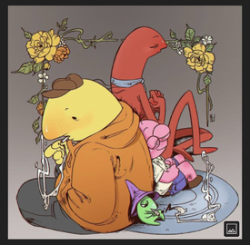
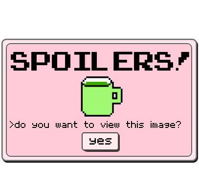
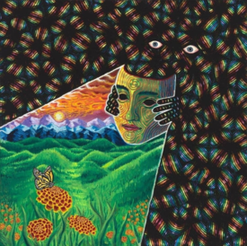
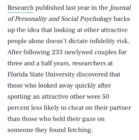
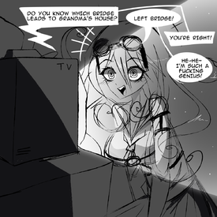
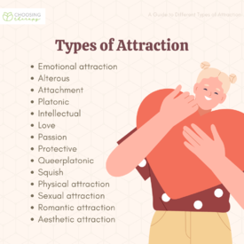

old-priest-in-fron…
confessions thread 2 Anonymous 63992
>>51270 previous bread
I never brush my teeth for the full 2 minutes Anonymous 64000
>>63992You're supposed to brush for two minutes?
Anonymous 64001
>>64000Wait is this not the rule? You brush your teeth for 2 minutes?
Anonymous 64186
I long for the day I don't have to see my brother again
Anonymous 64191
I had a dream about my imaginary husband and when I woke up, I cried because he will never be real.
2D/3D scrotes will never live up to him.
Anonymous 64195
Years of headphone use has damaged my hearing, I'm struggling to sleep now because of Tinnitus.
Should post this in the vent thread, but because this is a young a new thread I am posting this as a warning that anyone reads this should be very careful. Reduce the volume on your headphones if possible and wear earplugs at loud events. Don't sabotage yourself like I did ;___;
Anonymous 64204
I so badly wanna post myself on /soc/ and fish for compliments
Anonymous 64225
>>64195Sorry about your tinnitus anon, I have it in one ear and it sucks. I sleep with a white noise machine in my room now and it helps a ton.
Adding to this, overear headphones are much better for ear health than earbuds!
Anonymous 64257
IMG_20210730_07045…

I have bad grooming practices because i've been neglected as a child and i'm trying to properly learn how to take care of myself now that i'm an adult. I've also just now started to shave regularly but I still struggle with the "down there" part but i'll always be too ashamed to ask for advice because i'm way too old to not know this kind of stuff. I also have lots of hairs coming out from around my nipples and i wonder if i might have hormonal problems too. God i hate my life
Anonymous 64407
Every time I hang out with my dad, I feel guilty and every time I hang out with my mom, it makes me want to smoke
Anonymous 64421
>>64257It's completely normal to have thicker hair around your nipples. You can pluck them into want, but it doesn't make a difference cleanliness-wise.
Anonymous 64423
12345678654.jpg

>Be 20 years old
>Been talking to a guy online
>Start crushing on him a bit
>Find out he is over 30 years old
>Crush on him even harder
Fuck… I didn't know I had this fetish. I want this boomer to clap my zoomer ass. Why is agegap so hot anons?
Anonymous 64440
>>64423It’s hot because you’re a dumbass. He can’t talk to women his own age because they all know he’s a worthless creep and you think that’s cool.
Anyway good luck with the inevitable abuse.
Anonymous 64446
>>64423>boomer>30anon, that's a millennial
Anonymous 64447
>>64446Can't tell if autistically pendantic or head-in-ground ignorant.
Anonymous 64451
>>64447nta but 30 y/os are millennials fam, it's not pedantic to point this out. educate yourself
Anonymous 64452
>>64451"30 year old boomer" is a meme from a couple of years back.
Anonymous 64453
>>64195same… but I just want to tell you it kinda gets better. I have my tinnitus for 12 years now after I was at a concert at 15 and I got used to the noise. It's just weird that it'll never again be silent.
Anonymous 64463
i used to use a fake lilypichu voice
Anonymous 64467
>>63992i pretended to be trans on tumblr when i was a teenager. like i legit pretended i had a dick.
i dont know why i did it…
Anonymous 64482
I like sending compliments or nice questions anonymously to random girls I don't know. I just like making women happy! sometimes I do it to girlcows from lolcow.
Anonymous 64545
My newest hobby whenever I'm bored is looking at world maps and finding the most isolated and quiet city/town I can find and then reading up on them. I then fantasise about living there. Currently I am in love with Utqiagvik, Alaska.
Anonymous 64546
>>64545Man you should find another place because Alaska sucks. Can you imagine 6 months of night?
Anonymous 64547
>>64546I heard the stories about how bad it is in Greenland. Apparently Greenland has the highest suicide rates in the world, by a long shot. I would miss the sun, but the lil communities are cosy. It's just interesting what it would be like to live on the very very edge of the entire United States of America.
Anonymous 64548
>>64546You're thinking of Antarctica anon. The most northern cities in Alaska have 2 months' darkness at most
Anonymous 64551
>>64545My husband went there two years ago, he got stuck there for an extra day and said it was really interesting but also sucked ass to actually be there. There's a Subway there for some reason and he brought me back a t-shirt from there as a souvenir (among other things ofc)
Anonymous 64561
a 12 year old boy got close to me and picked me up and i kinda liked it god im so touchstarved
Anonymous 64811
I am 22 and I still sleep with my parents.
>>63992I haven't washed my mouth in months.
Anonymous 64818
>>64811When you say “sleep with my parents…�
Anonymous 64820
>>64818Sleep in bed. I do not like sleeping alone, I like resting while touching or holding someone else.
Anonymous 64942
i find ted kaczynski attractive
Anonymous 64958
I don't shower every day.
>>63992Same I don't brush for the full two minutes.
>>64195Same thing happened to me.
Anonymous 64959
>>64811Is sleeping with your parents acceptable in your country? When did you first realize that it weird to do?
Anonymous 64964
>>64561Why did he pick you up?
>>64811Do your parents just not have sex anymore? What do you do when they ask you to leave them alone for night? Sleep in the bathroom?
Anonymous 64975
>>64959>Is sleeping with your parents acceptable in your country?No.
>When did you first realize that it weird to do?I knew it since I was a kid, but strangers do not watch us sleep, so I do not care.
>>64964I am sure they still have sex, just not while I am home or in the bedroom, I have my own room, and I sleep there too sometimes, specially when I am feeling sick, or when I'm having period pain.
Anonymous 64983
>>64942Understandable
>>64958>I don't shower every day.That’s not weird/shameful at all. I only bathe every other day usually.
Anonymous 65884
EoE_-_Asuka_pissed…
My dad is a pretty cool guy. He won the custody battle for me which is an amazing feat in this country. But I overheard him say one tiny thing that ruined my perception of him forever.
I was about 13 or 14. My dad was bathing my little brother (a toddler at the time) in the tub. At this time I was a nerdy, unpopular KHV that was horrified of human touch considering my mom beat me. And I hear this fucking worthless scrote explain to my toddler brother that I'm a whore. Where did that come from?
I knew I wasn't hearing things, because as kids do, my brother yells "ANONETTE ISN'T A WHORE!" clear as day, and starts giggling.
Am I overreacting? Is this a good enough reason to hate your dad forever? It hurts more down the line knowing my parents couldn't protect me from the later sexual abuse I encountered.
Anonymous 65885
>>65884Pt. 2 to this confession? Or a different confession altogether.
I look for fathers in other older men, and sometimes I fuck up and start developing crushes on those men. The particular teacher crush I have right now is the worst (best?) I've had. I love this guy, and part of me wishes I could open up to him and tell him everything. Hell, I wish I was married to him. But I wonder, if I were to tell all this to an older man with daughters, what he would think of my dad? Would he laugh and say "fathers are just like that"? Would he be disgusted on my behalf? Would he comfort me? I'm so pathetic.
Anonymous 65888
>>65885Not saying anything won't resolve anything in any case, maybe try revealing some part of it and see how it goes?
Anonymous 65892
>>65884Sounds like a giant misunderstanding that you let fester. I'm willing to bet every dollar I ever make that there's a reasonable explanation to this. You won't get that because if you bring it up with your dad he'll say "wtf are you talking about" because he legitimately has no idea what you're talking about because the context and what was actually said was forgotten. Raising kids is hard, he clearly loves you if he was willing to raise you by himself.
Anonymous 65893
>>65884Have you ever talked to your Dad about it?
Anonymous 65895
>>65893No. Both my parents would call me a whore. Mostly my mom. I don't wanna fucking know what they think anymore.
Anonymous 65897
>>65896fuck if I know. The thing with my dad was the first instance but it seems like both my parents were talking about me being a whore behind my back. which isn't fucking true because I'm a virgin. It pisses me off more than anything else.
Anonymous 65900
i can't name a single U2 song. i've never knowingly listened to one.
Anonymous 65904
gud.jpg

>>63992I am not good at art, I am not good as I should be at my age and I hate it so much. I feel frusterated, that i feel stuck compared to everyone else, and that I am struggling to push myself to new heights. And I hate it even more because I love it too much to give it up. I hate having this need to draw everyday, I hate how I have to neglect my drawings in order to pass a class, I hate how I cant stop thinking about it 24/7 because I just love it so much. It is my driving force in life, and right now it is giving me pain, but I will never give up on it. I know I am bad but I wont use that as an excuse to never get better. You will see.
Anonymous 65905
>>65904>I am not good as I should be at my ageHave you actually specified what it is you should be capable of, or are you just looking at other artists polished works and beating yourself over the head for not being able to do so? The first is useful, the second is retarded.
Anonymous 65906
>>65897Annoying asshole parents are annoying asshole parents, but even the most deranged lunatic abusive ones have internal logic. If you're literally a virgin (and posting here I am going to assume you didn't date either), then I really doubt even the most horrid of parents would call you a whore out of nowhere. Not saying it's justified, not saying it would be okay if it was justified, I am simply perplexed as to why your Father who fought so hard to take care of you would say such a thing.
Anonymous 65910
>>65905what I should be more capable of. Especially when it comes to anatomy, its harder for me to manipulate the form. I have been getting better, but still nowhere near as skilled as my peers.
Anonymous 65913
>>65910And you actually specified what it was and what to do about it?
Anonymous 65915
>>65913yes, i have been studying and doing practices with and without references, and making fun projects that consists of what I am learning. I have noticed a small boost in my skill, but I still have a way to go.
Anonymous 65916
>>65915Then why worry? No one else is you, no one else has had the exact same circumstances as you. If you ever feel like a huge pile of shit remember Van Gogh didn't start training until 27 and nobody can shut the fuck up about him. What matters is if your product is good eventually, any timeline analysis is just wankers trying to justify why things happened the way they did.
Anonymous 65922
>>65906me too. that's why it bothers me so damn much. it disgusts me so much I don't like looking at them when I remember how many times they've called me a whore.
Anonymous 65923
>>65922Man that sounds awful, he's done this multiple times or just once?
Anonymous 65924
>>65884>>65885>>65895>>65897>>65922Wait, so your father called you a whore multiple times? Or are you assuming he does because of what you heard when you were 13-14? Because honestly I'm on the same boat as
>>65892 and think it's a big misunderstanding, and through the years you've thought too much about it. Like what's the logic behind him calling you a whore to your toddler sibling? My headcanon is your toddler brother heard the word and asked your dad what it was and he joked that you were one? Idk, sounds wacky that your father both loves you and fought to raise you despite your abusive mother and would do something like this, unless it was a dumb joke on his part.
Anonymous 65925
>>65923>>65924Dad called me a whore once, mom has called me a whore repeatedly since then, and it really seems like they sometimes get together and gossip about my supposed whore-dom and it just pisses me off.
Sorry for the vagueness. It most certainly wasn't my little brother asking what a whore was because I KNOW I heard my dad pathetically venting to my brother all those years ago.
Anonymous 65927
>>65916Thank you… I really needed to hear this
Anonymous 65941
>>65925Maybe they think that you are fucking guys on the side because you have not proposed a single potential boyfriend to them, and they maybe think you are too pretty to be still single virgin. Or maybe they just don’t like the stuff you are wearing? Plenty of moids call girls with revealing clothes that they do not find fashionable whores
Anonymous 65969
>>65968Seaweed snacks fuel me, this isn't a confession, you're just demonstrating great taste
Anonymous 65970
>>65969Is it a snack if it's just a plain sheet of konbu?
Anonymous 65990
I think retards/ downs syndrome people are funny, and not because they're ""cute"" but because they're retarded.
Anonymous 65993
There's this girl in one of my Zoom classes who always gets on cam. She tries so hard to look like a boy, but she's just some chubby, average girl with "they/them" pronouns by her name.
I know it's not a big deal, but I feel like I need to vent about it. It's cringe. What anime and self-loathing does to a mf. It's kind of entertaining to see her every class, though. Like a sideshow distraction. Her face makes things a little less boring, I'll miss it when this class is over. I guess she's cute or whatever, I don't know.
Anonymous 65996
>>65993>I guess she's cute or whateverTsundere moment. Perhaps you, too, were affected by anime.
Anonymous 66046
Is it weird that I really despise yuri, as a lesbian?
Because when I look at the yuri character who has balloon tits/butt, or is underage, or jokingly gropes the other woman, or does the cunnilingus the wrong way, or looks at the viewer, and plenty of other small stuff…
it gives me a feeling that the drawer doesn’t see the yuri characters as human. Doesn’t see lesbians as human. Idk, a chilling â€awakening†that I cannot un-realize once I notice it.
Can’t shake the feeling that I’m looking at the same stuff all the deranged misogynists and delusional troons are feeding themselves from.
That all the evil that seeks to harm people like me is sourced from this stuff, and that I should feel bad for enjoying it. Even the cutesy innocent stuff gives me the feeling that it’s only drawn so that the innocence could be tarnished or idealized.
>inbf they’re just pics
I know I’m overthinking it, and I wish to know how to stop.
Anonymous 66059
>>66046The vast majority of yuri/GL really is like that becuase it is indeed made by moids. I liked the little GL I managed to find that was actually made by women. It's yaoi/BL that I personally don't get the appeal of at all. I get that it makes moids seethe, but I'm still not interested in watching men fucking each other. I know that many interpret yaoi boys as butch women but I'm neither butch nor really into butches myself so it still doesn't attract me. I wish more women made more quality GL.
Anonymous 66070
SECAjzN.png
Vent thread is full so I'm posting it here.
>Me and my only and I guess best friend are looking for a job, we are neeting for almost 3 years now and are tired of it
>Decide it's best for us to apply for the same job so we can work together, assuming we'll be able to find a job with two applications available
>Fast forward to september, I notice she barely messaged me >Message her asking if she can go with me to the vet because I need certain assistance
>She says she's busy and sick
>Message her few days later telling I found a suitable job for us >She says why did I send her this, I should be the one calling
>I ask her why This is where I get a feeling she's frustrated for some reason
>She says she has been working for almost a month now
>I ask her why didn't she tell me earlier
>She says I didn't agree working on other jobs she offered
I fail to see that as a valid reason to not notify me when she started working, besides the fact that she might be just annoyed with me. And it kind of annoys me too because I also offered plenty of jobs and she never agreed to any of them.
I just feel… alienated? I mean, she's too busy working right now so we can't even go on a walk together or anything. I don't have anyone else to message either. And the primary thing that upsets me still I that she didn't notify me. I feel like a burden now that doesn't do shit. I'm still going to get a job by the end of this year I'm pretty sure, but I feel like we'll just grow apart because she I think never bothered to message me about anything for almost the entirety of september.
I don't want this to happen, since we've been friends for almost 8 years now and I have no one else to share my life with and vent to and neither does she. I'm still worried about getting a job because I have to care for my cat, but I'll hope I'll be able to find one that has a decent schedule. Though most jobs that have my desired requirements (which are: i don't have to interact with customers and it's not 1 hour+ away from my home) are 10+ hours.
Anonymous 66084
I was in a discord LDR and I "fatfished" the person. I still cringe so much thinking about it years later, I hope they forgot about me and never found out my real weight back then.
Anonymous 66087
>>66046Yuri is not supposed to be a representation of real lesbians, but rather the opposite. Just like anime in general is not supposed to be a representation of real life or real human interactions. You're just expecting it to be something it's not.
Anonymous 66125
>>66046Huge yurifag dyke here. Sounds like you just don't like animu or Jap writting style in general, maybe try Korean shit? Anyway, contrary to popular belief, most yuri is actually made by women, including the lots of the moe subtext ones you find in the Kirara/Cune magazines. Porn yuri is the one mostly done by males but you can clock them because of their artstyle, like you said balloon tits and some other gross shit. But once you know which artists are female and dedicated creators you won't have to touch moid yuri ever again. That said I do like Kurogane Ken/Kishi/Takashi Ikeda because they are not incels and it shows, even if they are moids they can pull off very good yuri romance and eroticism, but only those 3. All other moid artists suck.
>>66059I also advice you to try the Korean shit instead. All the lesbians I see complaining about Jap yuri end up loving the Korean/Chinese manwha. If you need recs for female-made Jap yuri I can help though.
>>66087Also this. Yuri ruined me because I got heavy into it before real relationships and now real shit is not appealing to me anymore. Reality and yuri are not compatible.
Anonymous 66127
>>66125What are your recommendations? Japanese, Korean or Chinese
Anonymous 66128
Most school shootings are self defense. People who demonize these kids have no idea what it is like to be backed into a corner and feel a sense of desperation going to school every day knowing they will be subjected to torture, either physical or mental.
Anonymous 66131
>>66128Which ones you consider to be self defense?
Anonymous 66142
1500743750443.jpg

>>66127Alright. Assume all artists are female unless stated otherwise btw.
>chineseIn my opinion these are the worst, but some people really like them. They mostly do schoolgirl shit that barely goes beyond subtext, maybe because of harsh anti-homo laws.
>Their StoryReally slow updates, I think author is already in a gov watchlist because she also does yaoi and got told to stop once.
>Green tea bitchHaven't read it but a lot of people are loving it. Artist sex unknown to me.
>koreanLike 90% of these are erotic telenovelas done by female artists. Almost no schoolgirl shit. In my opinion they are either so bad it's good or actually decent stuff.
>Her Shim CheongHistorical, not erotic, probably my favorite manwha. Explicitly discusses misogyny in the era its set in. Not sure about the sex of the authors (they are a pair), I think they also do yaoi so probably female but have male avatars thus the confusion.
>Moonlight GardenHistorical, erotic, weird female for female prostitution setting but it's cute. Good read if you're horny I guess.
>White Angels Have No WingsModern era, schoolgirl shit, slightly erotic. People into BDSM and bullies love this shit because it touches those themes. Personally I didn't like it very much.
>White Angels Have No RestContinuation of above but they are no longer schoolgirls, it became almost 100% porn. Didn't read past the first chapters because I hate the MCs.
>WDTFSI think this one was the very first one that started it all. It's a fucking telenovela through and through. Very erotic. I think it's ok but it still got a gorillion fans who absolutely love this series. Recently it got a drama CD.
>Relationship GuidelinesSlow schoolgirl shit but I like it, characters don't look like kids. Not lewd. Just check it out.
>LilithBDSM heavy shit, I don't like it but a lot of people do.
>PulseActually not Korean, artist is thai or some shit. Anyway, it's a good porny series.
>JapaneseI'm probably biased towards JP shit because I'm a weeb so this will be a long list. JP stuff is usually schoolgirl shit but as of recently more and more series about adults are coming out.
>Girl FriendsThe yuri classic by Morinaga Milk (do check out her other stuff). It's sweet schoolgirl shit, very slow to develop at the beginning but it gets better. Lots of stupid drama as well.
>OctaveYou either love it or hate it. Adult setting, slightly erotic. Setsuko is a saint.
>CitrusYou've probably heard of this. It sucks. It's a telenovela but with retarded schoolgirls. I hate it. If you like Citrus consider suicide. Still putting it here because millions of people worldwide love the shit out of it so maybe it could also be your thing.
>Yagate Kimi ni NaruAlso probably have heard of it, insanely popular in the past few years. It was ok, definitely felt different from other schoolgirl shit but I don't think it's too special. Sayaka is best girl and if you like her please do read her novels after completing the manga. Actually her novels are what I would recommend the shit out of this series.
>Kase-sanTomboy yuri great. Fluffy and cute.
>Handsome Girl and Sheltered Girl5/5 bretty gud I even bought it in Japanese. College setting. It's silly but also has good romance. Short 2 volume manga definitely a recommended read. Artist is most likely female, authors (Mochi) are a het pair I think.
>Koushin Koinu Ni Koibumi WoOne of my personal favorites because I'm a militaryfag. Historical, probably set in the Meiji era since there are references to the Russo-Japanese war. It's actually schoolgirl shit but set in a military academy for girls. It's just a cute love story, nothing more to it but art is very good and Tamasaki Tama definitely knows her military shit of the time, so the setting feels very authentic.
>Asumi-chan Is Interested in Lesbian Brothels!One of my favorite ongoing manga. It's lewd as the title suggests but bretty gud. It actually sparked a current trend of lesbian prostitution series for some reason. Author is female, if you have doubts about it.
>The two of them are pretty much like thisAdult setting. Short chapters. Cute series with an already established couple. Author is Ikeda Takashi, also did Sasameki Koto which in my opinion is not that good but this is. Moid btw.
>The Ends of a DreamAlmost completely translated, 2 volumes. Incredibly depressing story of two women who lived through WWII and the eras after it. It's recounted in reverse chronological order from when they are old ladies to when they are girls. Cannot recommend it enough.
>Aoi HanaAnother yuri classic, author does all sort of LGBT stories. For most of the story it's schoolgirl shit but still good, introspective kinda stuff. It also got a very nice looking anime by JC Staff back then in 2009.
>Still SickAbout a yurifag who doesn't let herself love real women. Adult setting. I think it's cute, funny and good. Some drama here and there too.
>Tsurezure BiyoriDiabeetus-inducing schoolgirl shit. It's short, like 2 or 3 volumes total. Nothing special but again, very sweet and innocent. Author might be a moid but who knows.
>Hana ni ArashiIt's like a contemporary Girl Friends but done right. Also sweet, cute and fluffy.
>Hello, Melancholic!MC is like a non-furry female Legoshi. I like the side couple way more but overall still enjoyable.
>So, Do You Want To Go Out, Or?Long running series getting officially translated I think. College setting but non-conventional love story, if you can even call it that. Basically the plot is that the two MCs only go out with each other because they are the only lesbians they know, not because they actually love each other, thus shit eventually goes down.
>Hayate X BladeSo this one is actually a battle shounen but gay as fuck. It's very old now and finished so no one really talks about it anymore but when I was a baby weeb there were threads about it in /u/. The first series had like 18 volumes and the second one another bunch. Still getting translated but I'm sure YP will be done within 10 years, hopefully. Very funny btw.
And finally I recommend the following authors in general, who have done several good series/doujins so you might as well check out all their stuff.
>Morishima Akiko>Amano Shuninta>Takemija Jin>Morinaga Milk>Yuni>Ooshima Tomo/Ooshima Towa>Negom>Nekomura>Hiiragi Yutaka>Kuwabara>Itou Hachi (oneloli warning)>Momono Moto>Neji>Yukiko>Sato>Oosawa Yayoi>Mikanuji>Tamamusi>Kishi Torajirou (moid)>Kurogane Ken (moid)>Nagori Yu>Codeyamada>Iruma Hitoma (moid)>Nishi Uko>Hayashiya ShizuruAnd I cannot think of more at the moment. If you're also willing to play VNs I really recommend the FLOWERS series, they are kinda like Marimite but gayer and the subject of homosexuality is actually touched. Writer is female. Great OST. They are for sale on Steam and the translation for the last game of the series will probably be finished by next year. Also recommend A Summer's End, it's set in the 80's in Hong Kong, devs are Asian-Americans or some shit, artist is Lilaccu who is a JP les living in Canada I think. Anyway, this is actually a lesbian VN.
Anonymous 66161
>>66128lots of people get bullied without resorting to shooting innocent people that happened to go to school with them. school shooters are common now because already violent people
men know they can garner at least a bit of sympathy if they bring up muh bullying as an excuse to murder people, and you fell for it
Anonymous 66162
>>66161Those people aren't innocent, they are accomplices. They witness abuse and do nothing to stop it/get entertainment from it.
Anonymous 66163
>>66136how much were you paid to post this shit?
seems like even there isn't free of you bitches. you know what i'm talking about. enjoy selling yourself to the government then
Anonymous 66164
>>66162And I'm sure you were the perfect white knight who stood up to all the bullys to protect those kinds of kids when you were in school huh?
Anonymous 66167
i might be ready to be put down.
Anonymous 66172
I am about to purchase a PO box and a gun, when I'm ready to end my life I'll have the option easily in reach. I already wrote my suicide note
Anonymous 66173
>>66164No, I was one of those kids. I hated all those people. They were all equally guilty. It would have been so easy for one person to act and help me, a student, a teacher, anyone could have stopped it, but they were all part of it. If they put a person in a situation where it is 1 against 100 I completely understand looking for a gun as an equalizer.
Anonymous 66183
>>66172Don’t do this. Don’t be a slave to head chemicals and passing depression.
Now answer the first question, why?
Anonymous 66184
>>66142Not that anon, but as a fellow yuri enjoyer I thank you for this goldmine.
Anonymous 66188
1459420930645.jpg

>>66184No problem. Hope you find something you like.
Anonymous 66199
RDT_20210925_23343…

Been chatting with this guy from reddit. He's hot and charming and a good bit older than me which has always been a kink I was too worried to try out irl. He's also married.
Now I knew that going in and asked him as soon as things got sexual if his wife knows about his reddit and that he flirts with girls. He said yes but she doesn't want to know specifics. Alright cool, I like to take people by their word until proven otherwise. But then I recently went through his reddit comment history and he said, months and months back, that online stuff doesn't "feel like cheating". So I am worried he is doing this behind his wives back.
Idk how to confront him about that. A selfish part of me doesn't want to at all since I am riding the high of the early relationship hard and I don't wanna lose that. I really really like him. But the thought of being the other woman and helping a guy cheat on his wife grosses me out, even if it's just sexting.
>>64001Pretty sure the rule is 3 minutes.
Anonymous 66228
>>66142>>Iruma Hitoma (moid)my confession may as well be that adashima is my favorite yuri story despite being written by a moid. i crave the slow-burning melancholic introspection that the novels have. great recommendations though, some stuff in here i haven't read. thank you.
Anonymous 66230
>>65900This isn't a bragging thread
Anonymous 66271
>>66180>>66183I believe it is the ultimate act of self empowerment and a final rebuke of materialism. I feel cursed with too much knowledge and through my rational being concluded that humanities fate is hopeless and I can't do anything to change it. Im better now though, I'll just settle for lucid dreaming as a healthier form of escapism/self control.
Anonymous 66279
EVxsfSfWoAEg4D9.jp…

>>66228I think Iruma is alright, not bad but not amazing either. I don't like Adashima that much because it's slow as shit, but I liked what he did with the Sayacuck novels. It's not that I hate moid authors or have something against them, it's just that most of them don't fit my taste.
And speaking of LNs I started reading both the "Completely Falling Within 100 Days" one and also "There's No Way I Can Have A Lover" by the same author, which are also nice and can check them out if you're bored. Both also have ongoing manga adaptations but I think the scanlation groups stopped them, one because it's hard for them and the other because of NTR autism. Anyway, the novels are still being translated as far as I know.
Also not exactly weeb but the Kiyoshi novels from Avatar have yuri and they are nice overall if you like that series.
Anonymous 66280
>>66271Think about it this way bro, no matter what you do or everyone does, humanity will die out eventually. The universe is not forever either. Simply live doing what you think is right for yourself and others, after all you only got once chance of being alive. I do understand however wanting to drop out from life if you live in a state of perpetual suffering and/or anguish. That's also alright.
Anonymous 66284
>>66230okay, that did make make snort
Anonymous 66291
I wish I was kidding but my mom buys me all of my clothes.
Anonymous 66405
I am very attracted to petite women but also so, so envious.
It isn't even that I actually want to be short. By my own standards I'd like to be a bit taller. But short women are so cute, proportional, and attractive no matter what and it makes me wish I could embody that.
I feel masculine for various reasons (voice, mannerisms, inability to show affection) and this is just one flavour, but it's been more prominent in my life recently for some reason. Makes me feel guilty and sad.
Anonymous 66415
>>66405I like to be cute but I also want to be taken seriously. And that is nearly impossible for someone who is petite and young. Unless I point a gun to someones head
Anonymous 66426
>>66415>tfw no gf to point a gun to my headBut seriously, I understand that's an issue (especially when it comes to men) and grass is always greener.
Anonymous 66470
>>66426True, but it's not like I want a different body, I'm just sad that the more small you are the less people take you seriously/respect you. Especially if you're female.
Anonymous 66474
tumblr_inline_okk1…

i'd go hebe for y0 ryuji. i need help.
Anonymous 66492
>>66199You can simultaneously believe that internet shit isn't cheating while also having a spouse okay with cheating. I don't know if that is the case for him in particular, but it looks like you're just trying to not be a shitty person while engaging in shitty person pursuits.
Anonymous 66494
>>66199>the thought of being the other woman and helping a guy cheat on his wife grosses me outIf it really grossed you out, you would've stopped sexting this guy by now.
Anonymous 66539
>>66474if you know what that is by name it sounds like you've figured this out prior to now
Anonymous 66543
>>66405>>66415>>66426>>66470I fantasize constantly about having the ability to change sizes.
Imagine becoming tall at work so everyone respects you.
Imagine becoming short at home so your bed becomes bigger than king-size.
Imagine becoming tall at social gatherings so you intimidate and scare off shitty guys.
Imagine becoming short in the bath tub so it becomes more like a hot tub.
Imagine becoming tall at the supermarket so you can reach everything and be strong enough to carry it all.
Imagine becoming short at mealtime so a small portion can fill you up.
Imagine becoming tall with long legs so you can run faster than everyone.
Imagine becoming short with small legs so airplane seats are spacious and luxurious.
Imagine becoming tall when you want to tease, bully and dominate your romantic partner.
Imagine becoming short when you want your romantic partner to tease, bully, and dominate you.
I want it all!
Anonymous 66551
>>66539i literally found the word here on some other thread. god forgive me
Anonymous 66856
>>65925https://en.wikipedia.org/wiki/False_memory_syndromehow would a toddler even know what a whore is, why would he know to defend you, why would a father mention that to a toddler? the story makes little practical sense. it was probably a traumatic dream you had when you were a child that you remembered as real. everyone has experienced the feeling of realizing something happened in a dream hours after you wake up, even as adults. you probably had the dream because of how your mother treated you and you were afraid your dad felt the same way.
Anonymous 66898
>>66856wh… anonette I… no anon it was real my dad is just an angry man and would tell anything to a toddler.
Anonymous 66958
>>66898I believe you anon, what you said isn't outlandish at all?
Anonymous 66973
i wonder what my deviantart e-gf i had when i was 10-12 (don't worry she was the same age) is doing now. the last time i talked to her she was getting groomed by this teenage boy who got her to dump me. i hope she is well and away from degeneracy now.
Anonymous 66974
i think foreskins are very sexy
Anonymous 66997
>>66974>>66990why is this a confession? i'm confused
Anonymous 66998
>>66997Because Americans are mentally ill.
Anonymous 67001
>>66974Men don't have good enough hygiene to be trusted with them
Anonymous 67048
>>66974uncut dick feels so much better too
Anonymous 67073
>>66974I think they're absolutely disgusting, and I honestly think men promoted this meme to benefit themselves. What's attractive about a giant wrinkly mass with smelly cheese between the folds?
Anonymous 67075
>>67073the american moid is mad lol
Anonymous 67076
>>67075I actually live in a country where circumcision is really rare but my bf is jewish so I'm blessed
Anonymous 67158
>>66974I had to help my nephew pull down his foreskin when he was a toddler, he had that condition in which the skin is stuck to the penis and he could not pee correctly. First and last penis I have touched.
Anonymous 67163
Cinderella-Birb.pn…
I have worked the same job for 13 years, and made a pact with someone else we leave at the same time. I can't leave just yet, sadly. Even though I don't have a full degree, I've applied to a couple teaching jobs in Japan just on a whim and prayer. I know I'm not fully qualified and it's shit work, but I always dreamt of being an English teacher there.
Anonymous 67187
>>67158>he had that condition in which the skin is stuck to the penisyou what? no, it's called being a toddler
https://www.kidshealth.org.nz/how-care-your-childs-foreskin Anonymous 67228
>>67073Dick cheese is a meme surely..?
Anonymous 67257
IMG_9177.JPG

>>66271>I feel cursed with too much knowledgeHere, you dropped your hat while studying the blade.
Anonymous 67271
What’s the female version of dick cheese?
Anonymous 67276
>>67271the same thing basically
smegma
Anonymous 68072
Whenever I’m waking somewhere and I see pretty flowers in peoples front yards I pick them.
Anonymous 69496
I accidentally ghosted someone, because the app didn’t notify me of them responding. When I checked the app again after a few weeks and apologized to them, they just gave some snarky self-pitying answers and ghosted me. Yeah, another little bit of faith lost in humankind.
Anonymous 69497
I don't watch movies.
Like, at all. I don't care.
When I say this to people, they look at me like I'm some kind of freak. Why is it mandatory to consume a certain form of medium? Most people don't watch stage plays, or operas. Why is watching movies this one activity that qualifies you as a normal human being?
And I don't listen to music very much either. Most of it is bad, and the good stuff takes a lot of effort and research to get into. I used to read reviews, hunt down albums, explore genres as a teenager, but nowadays I don't care.
Anonymous 69502
>>67259
Most men don't clean themselves at all in the shower so much as they just stand there in the water
Anonymous 69510
I consider myself a very committed and loyal person, but knowing I will never get to experience the honeymoon phase of a relationship again depresses me sometimes.
Anonymous 69517
I move sidewalk snails out of the way when it's raining. I hate stepping on them it is depressing. Why must they be so dumb!! I 'll do this til I'm 89…
Anonymous 69519
>>69517Hah, I hate snails, I am irrationally afraid of them. I'm so lucky to amost never see them where I live.
When I was little I saw a slug in the bathroom while I was on the toilet. My parents came rushing to take it out because I would keep crying and screaming "A SLUG!!".
Anonymous 69520
>>69502Men only shower because they get to jack off there
Anonymous 69673
>>63992I hate people that don't pay taxes as offshore accounts contribute to so much inequality but all my money is offshore in someone else's account. I'm not trying to doge taxes I just don't know how to pay them as I was working a sketchy job before and now I'm afraid what will happen if I do try to pay them.
Anonymous 69781
I know this person doesn't exist but I want a nerdy awkward boyfriend who thinks I'm too good for him but meets my standards anyway. I want someone to fight for me in a way that's not needy and pathetic. When I think about some average looking shy boy who is respectful and hardworking and not a fucking cunt I melt.
Anonymous 69786
>>69781SAME
Fucking hell I swear anon.
Where's that "shy nerdy guys" pic when you need it Anonymous 69790
tumblr_o9ohzk3sRO1…

>>69781this is basically what my bf is, it is achievable and he does exist
he's a music nerd and I wake up to songs he's made for me
he's 6'1 and has a handsome smile and beautiful blue eyes and looking at him makes me swoon
whenever I have an emotional melty he never gets annoyed with me, he's SUPER patient and reassures me he loves me and will be there for me and listens to me
I never see him as pathetic or needy. he's just a nice man who loves me
he stopped looking at porn for me because it made me really upset when I found out he looked at porn (he already thought the porn industry is evil but looked at amateur stuff once in a while)
I told him how it felt like emotional cheating and made me feel really bad, he cried and told me he never wants to make me feel that way
a nice thing too is whenever I say "ugh I hate men" (usually in reaction to some obnoxious man in something we're watching) he laughs and says "I don't blame you" but never complains about women
he never gets controlling/possessive over me and trusts me so much. like just recently I was thinking about going to a concert with a mutual male friend of ours, and he was supportive? I have a lot of exes who would have a melty over that
I don't think I ever would have thought I could find a man who is this loving a couple years ago
my advice is have high standards. cut men out if they treat you badly and don't tolerate anything lower than what you want
also, don't look too hard. it will come to you. you will meet your person
Anonymous 69824
>>69823
>envy leading to accusing an anon of being a shitty gf
Wild. A man gives basic respect to a woman and reciprocates the romantic overtures that the average woman makes and you say it's impossible.
Women in relationships make men food, do housework, and idk about you but I offer my creative services to those I love as well similar to anon's bf writing songs. Fuck, some women get plastic surgery and change themselves deeply for men.
Most women do romance naturally.
Anonymous 69826
>>69823
>>69825
My bf is similar. I agree with the anon that it's about having high standards. Before my "supermodel" bf, I dated a lot of losers as I was so desperate for attention (in a sad way). After a while I started being very strict and wouldn't even give guys a first date if I suspected red flags/clashing interests. Eventually I found my bf and things are great.
If it helps make sense on things, my bf and I have a very similar personality type, sense of humour, and like all the same interests.
Anonymous 69828
>>69827
I don't know about the other anon but I'm not ugly myself. I make him laugh, we like to do all the same things, and we're both pretty introverted. We both have some spectrum qualities too (though probably not enough for a diagnosis) so we understand each other well on a basic level that other people don't always get.
I'm pretty sure he wouldn't be perfect to everyone, he is just perfect to me.
Anonymous 69829
>>69827
Maybe their bfs have some sort of savior complex where they want to fix and take care of loser girls.
Anonymous 69830
>>69829This post makes me want a cute shota bf to encourage and support me.
Anonymous 69831
>>69829True, I have encountered a man like this. He's academically gifted, health conscious, cute, kind, etc. It made me uncomfortable because I like jerking off my ego by playing the "fix him/her" role myself.
At any rate, dudes with this fixation exist.
Anonymous 69833
A guy from our dorms, who always presented himself as this outgoing social butterfly, recently confessed to me that his weekly "nights out with the boys" were a lie. In reality, he drives to a mall parking lot to cry in his car.
I… had to hold back a chuckle. I don't know why it made me want to laugh, it was so sad, but so funny/ironic at the same time, in a Greek tragedy kind of way.
I think I'm fucked in the head.
Anonymous 69860
Over the last two years I think my complete social detachment from everyone I know has made me lose my mind. Sunday makes the two year anniversary of dropping out of my first semester of college due to worsening mental health. I lost most of my friends due to various circumstances. I can feel myself losing grip on reality more as time goes by. I have so much more trouble relating to people now. I tend to envision myself as an observer "behind the glass", watching the world from a safe distance, observing the patterns and habits and peculiarities of the people around me but never getting close. At times it's hard almost to even conceptualize myself as a human being. The other night I went for a walk and the wind began to pickup, and I just stood there like a retard with the wind blowing in my face because it felt like my molecules were being scattered and passed through the wind. I have been thinking about a brief relationship nonstop for longer than the relationship itself even lasted. I should be worried, but its hard to even care. I guess that I care to some degree, or else I wouldn't be posting.
Anonymous 69861
>>69833Oh god. I also kinda laughed, dammit. It just sounds like something straight out of a sitcom, that's why.
So that is my confession for today
Anonymous 69980
love-is-in-the-air…
years as an infant of watching videos on my phone of people doing stupid things and getting recorded by passersby has given me this social anixety where if i see someone with their phone out i'll aggressively stare at their phone camera just incase they're recording so they'll be like "oh fuck she knows"
Anonymous 69981
>>69980>if i see someone with their phone out i'll aggressively stare at their phone camera just incase they're recording so they'll be like "oh fuck she knows"based
Anonymous 69982
>>69860Yeah that feeling of losing grip on reality or things seeming fake can be rough to deal with.
Anonymous 70614
When I get drunk I have strong need to kiss and touch the one I am with. Even he didn't attract me before, when I drink few beers, I am a completely different person and it is so fucking strong. I don't have this feeling when I am sober and I don't know wtf is that, but it scares me and I feel extremely ashamed of it, because many times I couldn't resist.
Anonymous 71388
The fact that there’s people, powerful pedophiles, raping kids, in a civilized society, that are able flee justice with money… turned me into an anarchist. I lost my faith in politics forever.
Something similar happened to me personally, but I thought it was just one rich scrote getting away with what he did to me.
Perhaps I’ve said too much, but anyways, turns out that this issue is worldwide.
Fuck the system.
Anonymous 71588
I'm self harming as a way to decorate myself and look more visibly mentally ill. My SH is the kind that leaves no traces (I purge, beat myself up, choke myself with ropes) and because my coping mechanism for when I'm uncomfortable is to laugh about it, nobody believes I'm struggling. Not even psychiatrists take me seriously. It makes me feel like I'm going insane, like it's all in my head since no one believes me. So I'm going out of my way to leave permanent marks.
Anonymous 72036
>>63992I still almost every week from grocery stores nearby me, I’ll steal anything I can but mostly food items that I can afford but they are still expensive plus the tax here is high. Every week I probably steel around $100 worth of groceries, i steal from the same 2 stores
Anonymous 72342
I have a crush on a guy I work with. At least with working remotely I can't flirt with him.
Anonymous 72365
1629595835793.jpg

>>64811I hate being asexual and sex repulsed. I'm afraid no one will love me because of it.
I had a crush on a guy I met at work over the Summer. We had a lot in common but than I thought "oh, he'll probably want to have to sex with me." So, from then on, I pretty much avoided him until I quit. Part of me wants to desensitize myself to sex so I can at least mentally prepare myself for when it does happen but part of me thinks it's disturbing that I have to pretty much live a lie to keep a relationship going.
Anonymous 72366
>>72365Accidently relied to someone because I'm a dumbass. My bad.
Anonymous 72368
>>72365You can try to find a guy on AVEN (asexual forum). Maybe they have meetups once in a while. I also have 0 sex drive. My relationship is LDR (met once) so I don’t have to worry about it for now. I’m just going to try to make myself do it every once in a while once we settle down.
Anonymous 74138
I kinda wish that the dating app notified me when I get swiped left or didn’t match. Nothing identifying, just a simple notification that someone did.
Maybe I’m just a masochist or something. But this radio silence for most of the time is deafening. Need some kind of feedback, you know?
Anonymous 74903
i have a crush on a guy i shouldn't. my boyfriend's friend. i don't want to feel this way.
Anonymous 74910
>>74903I wish my boyfriend had attractive friends so I could fuck them
Anonymous 75346
6B8EA102-2E2A-4E50…
married for months and still a virgin. Neither of us is happy about that, just don’t want kids yet
Anonymous 75387
497a26cc-e815-4c49…
i really don't want to sound deranged so please bear with me for a bit. my father is very abusive and since basically my earliest memory has made my life a living hell. my mother was always more or less complicit though at times she could be very loving. also, although my mother is moderately attractive and my father, likewise, i more or less got his worse traits making me look downright hideous…
recently i found out that before meeting my father, my mother was very close friends with a japanese foreign exchange classmate who (though i think she was oblivious) seemed to rather be in love with my mother (he wrote her poems and drew her pictures, and tried to be a penpal after returning to japan). obviously my mother decided to either not acknowledge his interest or just was unaware, but i find myself wishing she had married him and i was his and my mother's child instead. i really don't know how unhinged this sounds but i feel like my childhood and teen years would have been so much better.
Anonymous 75469
im gonna be purposely vague but i did a retarded amount of research on some stuff and i ended up developing a crush on like the worst person. like actually i could not have picked worse and it probably genuinely says bad things about me. i need a lobotomy
Anonymous 75470
>>75469How can you say this and not post them? Cruel anon.
Anonymous 75473
>>75472>>75470no its not like "funny bad" or quirky bad or whatever its just plain old bad taste. im not like fishing to be asked, i dont wanna share i feel like it legit speaks badly about me
Anonymous 75480
>>75473We. Have. No idea who you are, I’ll share my stupidest crush if you do
Anonymous 75493
>>75469Anon I will bet right now there is no way your shameful crush is worse than mine (unless they happen to be the same person). I don’t know if you’re ashamed because he was a bad person or if it’s an embarrassing person, but yeah I know how you feel to find someone attractive and when you really, really shouldn’t.
Anonymous 75495
Screenshot_2022033…

>>75493>>75480anon fine but i guarantee you lost the bet
its literally derek chauvin :( Anonymous 75496
1634482952431.jpeg
>>75495You can rest easy anon, because mine is definitely worse. I also developed this crush through doing a retarded amount of research so maybe it's just a weird thing that happens sometimes. You are very brave for admitting it on here.
Anonymous 75497
>>75496anon you gotta tell me now. i cant have spilled that for nothing
Anonymous 75501
>>75495I've already gotten chewed out for it on lolcow before and don't want to go through that again… but I will say that he is objectively worse than
Derek Chauvin because he
has killed more people.
Anonymous 75503
>>75501its one of those
serial killer or mass murderer guys isnt it? oh dude this is a long shot but are you the
lanza anon? if so i saw you get rekt on the unconventional attractions thread. whether you are or not, im sorry bro. at this point i know your pain
Anonymous 75507
>>75504you and me when we see
autistic murderers (insert heart eyes emoji)
Anonymous 75662
1637C81C-53DA-4E78…
I posted in the friend finder thread (aaages ago) and amongst the sea of messages from thirsty moids, someone genuine actually messaged me. She and I talked a lot, a couple of times on WhatsApp video calls. So she certainly was real.
Few months ago, I was ghosted, not long after she told me that she’s feeling sick with covid sympoms. I sent her a message once in a while, asking if she’s okay. Yesterday, I went to work, and a subject that we often talked about came up. Even worse, it was by a woman with the same first name as her.
Well, I started crying. I have never cried after online friends before. Never. But now, just happened. Probably because I had also spent the past night wondering if she’s even alive. I was a fucking fountain of tears. It was so embarrassing. I miss her.
Anonymous 75675
Spoiler
>>75504I completely understand your attraction. What I don't understand is how you could do a lot of research on him and consider him one of the worst people ever, superficially on the basis of number of people killed, without looking at intention. His rant videos clearly explain his gripes and provide clarity that he was acting under the belief that death was the only way to save people. Had he, say, murdered people out of some sick perversion, or tortured his targets, or inflicted great harm upon them prior to death, I would understand calling him a bad noodle, but contrary to this he seemed to be aiming for a clear goal with the purpose of reducing overall suffering in the world, and took measures to ensure those he targeted died quickly and relatively painlessly. How can you judge him so harshly knowing this, worse yet, while claiming to like him? I don't think it's very cash money of you to slander someone you supposedly like.
Anonymous 75678
>>75503I don't understand why anons did that if it was in the unconventional attractions thread.
>>75504If I'm being honest, I have a shitty attraction to some murderer too but only for appearance… if that makes you feel any better anon
Anonymous 75681
>>75675He literally murdered a bunch of children. It doesn't matter how uwu deep his diary entries were or how bullied he was, he was a fucking child killer.
Anonymous 75686
>>75681He also wrote a story about a man getting with a child I think?? Or it was a possibility he did. I don't know if it was confirmed, its been a while
Anonymous 75687
>>75681Yeah, fuck him. He was also ugly as fuck with his too-long face & overgrown bieber hair
Anonymous 75689
pepe-hug.gif
>>75675You remind me of my mom. She was always a bit of a loser with a horrible past/childhood (she admitted it herself) and obsessed over things in the same exact way you did. The more underdog/misunderstood, the more fixated.
That isn't flattering at all, just so you know.
Anonymous 75690
>>75689Thank you for being honest. I suspected this was how you felt. It's ok if you dislike me. I never expected anything else.
Anonymous 75691
>>75690This is really weird roleplay, anon. My mom doesn't even have a laptop or a smartphone.
Anonymous 75692
>>75691I wasn't roleplaying as your mother. For a moment I thought this was a personal comment from someone I knew. Pardon.
Anonymous 75694
>>75692omg, anon, maybe take care of yourself and who you associate with more then. my initial comment was meant to be a roast. it's just a questionable behavior I see very commonly among women, especially maladapted kinds.
Anonymous 75721
>>75675I think you're just fucking with me, but in the case you aren't- you know things aren't always black and white? You can be attracted to someone and not support or condone everything they've done. I think it was unbelievably selfish of him to do what he did. He should have just killed himself and left it at that. Ironic that he was all about how kids should have the ability to consent like mini adults but then he took away their basic human right to just exist. I'm sure in his head he did think he was "saving" them from the perils of having to grow up in civilization, but if he was so big on kids having the right to make their own decisions then shouldn't he have let them at least make their own choice as to whether they wanted exist in society or not? Instead he made the decision for them, which yeah, makes him a selfish and terrible person.
Anonymous 76240
>>63992Despite being into stereotypically manly men older than me, when I saw a pictures of my boyfriend when he was preteen age I wanted to hold him kiss him and touch him just like I do now. I can't distinguish between romantic sexual and platonic motherly love. Fuck me I'm fucked up. Anonymous 76241
>>76240it's someone you are dating and it was just a picture. having these thoughts instinctively but knowing they are wrong is fine. it's when you start to kid yourself it is ok and it goes outside your brain that you have a problem
Anonymous 76300
>>69790>my advice is have high standards. cut men out if they treat you badly and don't tolerate anything lower than what you wantThis is also a recipe for becoming adverse to criticism, thinking that you don't have to grow as a person, or make compromises in a relationship.
This anon is lucky and has survivorship bias.
Anonymous 76306
I haven't brushed my teeth since 2015. It started from a contamination phobia where I was convinced toothpaste was poisoned.
Anonymous 76307
>>76306just go brush your teeth. don't overthink it
Anonymous 76308
>>76307She hasn't brushed her teeth in 7 years. It's a bit late for that. Half of them have probably rotted out of her head.
Anonymous 76309
>>76306Do you go to dentist checkups or anything? if it bothers you a lot you can get your teeth cleaned at the dentist + visit a therapist to treat your contamination phobia
Anonymous 76358
>>65990everyone thinks that but chooses not to admit it
Anonymous 76359
>>64811And I thought I was bad for sleeping with them until 13
Anonymous 76482
I'm jealous of how close my boyfriend is with his sister. Idk why, I just feel left out a lil when they're together, talking in their native language that I don't understand, making each other laugh so much and I can't even participate.
Anonymous 76733
>>63992I don't use toothpaste, I don't shower, I don't do shit with my looks not even deodorant and especially NO FUCKING BRA. I think all of these are just cosmetic and/or serve no value to me.
Anonymous 76801
>>66142Don't forget Sakura Trick. It's really sappy, but also enjoyable.
Anonymous 76807
>>66142ANONA MY BELOVED thank you for this yuri goldmine, autistic as it is it's broken down into specifications, genres, so I can know exactly what to get into. Thank you from a fellow himejoshi.
Anonymous 77276
I love my professor
He is the only adult who loves me in a way I can understand. He's taught me so much about life. not just school subjects he's expected to teach, but he's also taken the time out of his day to teach me about life. He does things for me that no one else would. I just love him to death and I feel like he cares more than anyone.
Problem is, now I want him to fuck me stupid.
Ignoring that completely, how do I tell him he's the most important person in my life, without freaking him out and getting reported?
Anonymous 77298
>>77276go masturbate until you see sense
Anonymous 77300
>>77276Sounds like infatuation rather than love. If you dump that on him he's might distance himself. Maybe you can wait until you're no longer a student and then ask him out?
Anonymous 77307
Maybe it's gross, but I don't brush my teeth
period. Never get any cavities either.
>>75346Ever heard of a condom? Or is he one of those "I don't wanna use a condom!!" types
Anonymous 77330
>>77307Are your teeth yellow?? Post teeth.
Anonymous 77399
>>77307how often do you get your teeth cleaned? why do you even do this?
Anonymous 77445
I’m considering making a few upvote bots on Reddit, not because I want karma, but because I need karma to get into the spesific subreddits I want to post in.
I have talked about my sensitive issues on that account, so it wouldn’t be safe to try to get the upvotes from scrote-infested popular subs without the karma limit, and the ones I’m posting in never have any visitors, and they’re rather rude and clique-y too.
Been browsing on those subs for 2 months trying to raise the karma to the acceptable limit, and it’s frustrating as hell.
Anonymous 77471
>>77445How would you even go about doing that without getting caught? For the longest time I downvoted posts I didn't like on all my alts and didn't get anything, then all the sudden I got a warning for vote manipulation. Okay fine, whatever, but now I don't think my votes count. I downvote something, refresh the page, and it's back to it's original count. Wouldn't the same thing just happen to you?
An easy safe way to get karma would be post art that's not yours to subreddits that it'd appeal to, like
video game subs. That's how I've gotten a thousand+ karma on one of my accounts.
Anonymous 77480
>>77445>>77471I've given up on reddit because of this. I don't want everything I post about linked together but their system tries hard to discourage multiple accounts by making you need to have minimum karma to post anywhere. I don't want to waste time making tons of pointless posts on each account so I can finally post the one heartfelt post I want to.
Plus redditors suck as people. All the people I know IRL who post on reddit are awful.
Anonymous 77521
>>77480>Plus redditors suck as people. All the people I know IRL who post on reddit are awful.100% agree. I've met a few people irl who regularly used reddit and they all came off as pretentious assholes. They were almost like reddit was a part of their personality. Being younger and stupid, I tried my best to make friends with these people but they shut me out.
I say this about social media in general, and reddit is one of the worst, it just oozes this disgusting negativity and narcissism that shapes peoples mindset in the worst ways. And first time I've heard of that, private reddits you have to make so many circlejerk posts before you're allowed in the club, thats just laughable. Call it conspiracy if you will but it seems to me there is some sort of mind programming happening with those sites. I notice a distinct personality difference between people who use social media little to none and spend most of their time on other things, versus people who spend most of their time mindlessly scrolling social media.
I guess this is my confession but these past few years my husband has been obsessively browsing reddit, to the point I feel like it's getting in the way of our relationship. tbh I'm a little jealous, I wish I were able to get his attention like that. Prob made this obvious but I don't use any social media at all, I mean it's ok with me if someone does, I just don't care for people who make it a significant part of their lifestyle. But this is like an unhealthy compulsion, he spends hours on reddit, it's the first thing he does when he wakes up, comes home, anytime he gets a free moment with his hands he's instantly jumping on reddit. He gets so into it he will sometimes not respond when I talk or says he just wants to be alone so he can do reddit. He rarely seems to go on any other site. I have a hard time even watching shows with him, half the time he'll pull out his phone and if I ask him if he can put it away he has difficulty paying attention and gets distracted a lot like his attention span is fried. I can also tell that some of the negative things he reads on there put him in a sour mood some days. He seems to go between looking at barely interesting clickbaity stuff and news fear mongering stuff. When I can actually get him away from reddit doing something else for a few hours he starts acting more normal. This is all very concerning to me. When I try bringing it up to him he just says I'm overthinking it and I should let him do what he wants. I agree a person should be allowed to do what they want but just Idk what to think about this.
Anonymous 77524
>>77521Could he have ADHD?
If not, you need to be strict and force him to put it away. Turn off the show if he takes his phone out.
Anonymous 77535
>>77524Don't know but I've considered it a possibility. Many days, for some reason reddit is the only thing he's willing to do for hours at a time. Even then he can't seem to sit still. With other activities he frequently gets distracted, tends to not pay close attention and fidgets and gets up often. He can't even seem to pay attention to a conversation half the time. I've known him a long time and this behavior has definitely gotten worse in just the past few years. While I want to blame the reddit obsession as the likely cause, who knows what it really could be. I don't like trying to tell him what to do, he can waste his time how he wants, but I do feel annoyed at times.
Anonymous 77542
>>77445you know theres subs like /r/freekarma and stuff that people just upvote whatever you post ya? makes it easy to get past those karma requirements
Anonymous 77543
>>77542Some subreddits will autoban you for posting there
Anonymous 78378
I have a crush on someone while in a longterm relationship. I'd never cheat though. I know biologically it's normal, but I still feel guilt.
Anonymous 78382
>>78378Are you with him irl? It's ok as long as you don't act on it imo.
Anonymous 78405
I’ve brought up some odd and controversial stuff up in conversation with people that I wish I didn’t, and I don’t like how I imagine it made me seem. I just feel bad I might’ve came across as a type of person I’m not.
Anonymous 78435
27935214_203562115…

Im a deeply repressed ftm (and maybe also lesbian I am not sure) but I try hard to hide it in part cause of my parents, in part cause I am religious and in part cause I would never look like a man (too short, wide hips etc).
I can get by fine usually but I would really want to have children one day so I feel like I should start dating. But I dont know how I would handle a relationship especially from the sexual aspect, since the thought of having piv sex makes me feel deeply uncomfortable. I was interested in some guys romantically before but never sexually and my libido is p much dead too lol. But idk what guy would want a girlfriend who would never want to have sex with him. I thought of becoming a nun but I think I would get bored of such a life quickly.
Anonymous 78438
>>78436Cause my parents would kick me out, I couldn't have a kid with a woman and also I said I am religious. I have thought about it before but I dont think anything long term would last and I would feel guilty leading other women on when I know it will not last very long
Anonymous 78439
>>78438Maybe don't date then?You can always adopt or have a spermdonor.
Anonymous 78447
>>78435Just because people tell you you're "a repressed ftm" doesn't mean it's true. What in christ does that even mean anon?
Anonymous 78451
>>78435There is no part of you that is male, just accept that. Maybe you are more masculine, maybe kind of gay, but you're still a woman. Have you considered you're just sexually repressed and that is why your libido is so low, and why you're uncomfortable with piv, yet you also desire children and find men romantically attractive? I think you're missing the simplest explanation here, and that's why you're thinking something as absurd as you being a man deep inside.
Anonymous 78460
1638401040290.png
>>78447no one tells me that, no one irl knows I feel like this even and I repress hard enough to the point where they probably dont even suspect it. I wanted to be a boy since I was a kid but unlike other girls who had a tomboy phase when they were young I never really outgrew that feeling, just repressed it.
>>78451I have nothing to repress, I was never bullied and no one ever treated me inappropriately (as far as I remember at least). It's more like, I still feel like puberty has not hit me yet (even though its obviously long over lmfao) cause I feel same towards men as I did when I was like 11.
>>78452I am sorry but I have no idea what you want to say anon
>>78454I don't take anything, I took T for a veeeery short amount of time but I pussied out and that was long ago. I felt good on it but the stress from being discovered and it fucking up my body permanently was just too much for me to handle
Anonymous 79023
I have really gross kinks that I'm always too scared to tell my bf about and its making me not want to be with him. But I know itll just be the same with anyone else I ever date
Anonymous 79025
smiling-man-huggin…

I can't imagine myself dating or marrying any kind of "normal" man. Pictures like this are terrible to me. The woman is pretty, but the man is literally balding with facial hair. I don't understand how straight women do this, I could never sleep with someone like that and be happy
Literally everyone I'm attracted to is either a woman, or an effeminate man. I have no idea how to even flirt with women, and coming out to my family members is impossible in my country. I might need to date an androgynous detransitioner or non-binary guy or something (and I mean aesthetically non-binary, not "I'm a normal guy who likes to get fucked in the ass with a strap-on or is just claiming to be 'non-binary' so some kinds of women will let their guard down around me"), at least some of them look alright and may be open-minded. I just want someone I find attractive, and that I can live in peace with. I don't know what I'm going to do
Anonymous 79026
>>78435If we're being actually realistic (and this counts as a confession for this thread, too), I think that you should take HRT if you want to but you should absolutely research/be told about all the possible risks and also what will happen to you on HRT. Absolutely all the upsides and downsides.
I don't really like this trans crap, but from a purely transhumanistic and body-mod standpoint, I think it's actually really good that you have so many options about controlling how you want your body to like. I see HRT (purely medical, unrelated to "trans identity") as a body-mod like anything else, such as boobjobs, BBL, lip fillers and whatever else you can think of. And I think there's nothing wrong if you want to take it for whatever reason, but I advise you to be informed and responsible about what it will do to your body.
Anonymous 79027
>>79025Nona, are you me?
I srs do not believe women are actually attracted to average males. How? Just how?? Short hair on men is just gross
Anonymous 79030
>>79025me too, i like effeminate men (although i have not been blessed with the attraction to women) but most of them are gay or assholes. i just want a cute guy
Anonymous 79031
>>78435you're not a man, you're a self hating woman. i am the same i hate myself for my gender but i will never be male and you should get that into your head too.
Anonymous 79036
1605421748839.jpg

>>79031I know anon I am not delusional, but I wish I were, and idk how to change it. Been in my head too long for it to just go away by itself too. 8-9/10 days it is something that I can ignore pretty well and be mostly content with being normal, but those 1-2 days feel really bad. You can only be a tomboy for so long (and I repress so hard that I am not even that lol) before your biology drags you back to where it wants you to be.
>>79026I do not plan on it, aside for the fact T destroys your reproduction system once youre on it for like 2-3 years (which is a big problem for me as Ive said), it only does so much. Sure it changes the face, the shoulders and makes you hairier but thats it, the ftm timelines you see are like 30%T and 70% intense gym routine. It would not fix my height, or my wide ass hips. My face is quite androgynous and I can pass as a cute 15 year old even without T, but if I trooned out I'd just be a boyfaced manlet lol.
Tbh the health risks aside for it nuking your uterus permanently are not that bad, but it's just there is more to being a man than having a stache and a longer midface and I can never have that, which breaks my heart sometimes.
This also applies to other groups than just ftms, but you can really do whatever you like to your body and get away with it until you hit your late 20s, and by the time you are 30 your bad decisions will have caught up with you. I am not sacrificing up to 50+ years of my life to live as a guy for some 5-10 years
damn this ended up being an essay lol
Anonymous 79037
>>79036you can be a gnc if it's the performance that tires you out you don't have to perform. you're a woman either way. but if you have trauma from gender driven abuse and sexism then go face those demons
Anonymous 79038
>>79037Nona I was kind of a tomboy (never committed fully but more than halfway there) for most of my life up until like barely 2 years ago and I had to become more feminine for my own sanity. It felt good performing masculinity, but usually what it lead to is me being put down and reminded of the fact that I am not a man and never will be.
Typical example:
>Go to the gym with some male classmates>I work out a bit and feel happy doing something masculine>Look at how they are doing for a little>They can pull much heavier weights than I can>Much more muscle mass for about the same amount of exercise too>Realize that Ill have to try twice as hard to achieve what they get with a modest amount of effort>Sadwent on for almost all of my teenage years until I decided I couldn't bear it anymore. I'd rather act as an average woman which makes you kind of invisible than being reminded almost daily of my innate inadequacy.
Anonymous 79039
>>79038Nona being gnc doesn’t mean you’re performing masculinity and competing with men. It doesn’t even mean being a tomboy. It simply means you’re not performing femininity ie putting on make up, acting in a way society deems acceptable for your gender, etc. i am gnc, i don’t go out of my way to act like a man, i’m just being myself and it happens to go against what people think a woman should be. Of course i’m not saying this is the standard, but it’s a choice for you if the societal idea of womanhood makes you uncomfortable. As for inadequacy, there are things men cannot do, that women can and vice versa. This doesn’t mean you’re inadequate. They are naturally stronger in the upper body, big deal nona they’re still retards. please don’t do this to your psyche
Anonymous 79046
>>79031You can be in your mind and thats all that matters. Though I don't know why it means you ought to go trans
Anonymous 79047
>>79030>>79027>>79025This is normal. I don't even believe that women like masculinity, I think they are intimidated and forced into liking it because men punish women who like cute guys, and punish the cute guys themselves. Still it is SO easy for them to be cute. Most men are actually really attractive and it doesn't take much effor they just go out of their way to kill their looks. We must revolt against this and have our own revolution because I'm sick of being numb.
Anonymous 79048
>>79046i don't wanna troon out? you must have replied to the wrong person lol
Anonymous 79110
>>79036>>79038there are still body mods you can do that aren’t as extreme as being FTM. something like anavar could improve your gym experiences without affecting future fertility.
more than that I think psychologically there may be ways of reconciling the many different sides of yourself rather than completely burying it.
Anonymous 79117
>>79039Nta, but judging from this logic I'm also gnc even if I don't identify as such, I just rarely put effort into being feminine and thought of myself as being frumpy for this
Anonymous 79122
>>79117it’s not about “identifying†if you don’t conform you don’t conform. if you don’t look and act feminine you will be perceived aa gnc regardless.
Anonymous 79298
Cringe, but I cried last night because of fortnite. I just want my friend and my bf's friends to win. Everyone is going to quit soon because we lose most of the time. I'm ok with losing but my friend who carries us gets frustrated. I don't want to let go of this game, I like it a lot and idk what else we could even play.
Anonymous 83030
I have a little crush on my teacher (no it’s not a high school teacher, just an online language tutor I have) but I know he’s just nice because I’m paying him lol also I have a bf which makes me the worst gf ever I know…
Anonymous 83045
>>83030I also have a bf and have a crush on my martial arts instructor, who is married. I'm also the worst gf ever, it's okay.
Anonymous 83048
>>83045>>83030You girlies are being too hard on yourselves. Just because you’re in a relationship doesn’t mean you go blind or magically stop registering other attractive people as attractive. I guarantee your bfs look at and fantasise about other women (all moids do, no matter what they tell you) so don’t feel too bad about it.
Anonymous 83056
>>83048You're right anon. It's just biology. Thank u!
Anonymous 83062
>>83048There is a difference between noticing someone is attractive and indulging in that attraction. The way I see it, a "crush" is something more active than just noticing someone is attractive. It requires spending time thinking about them and fantasizing about them, it is definitely something voluntary and shitty to do when in a relationship.
You both should cut it out or break up with your bf.
Anonymous 83063
>>83062>There is a difference between noticing someone is attractive and indulging in that attraction. The way I see it, a "crush" is something more active than just noticing someone is attractive.Disagree
Anonymous 83067
>>83063Cool. In the likely event her boyfriend also "disagrees", she should be careful not to mention it and risk her ass being dropped.
Anonymous 83069
>>83067You sound like an unhealthily jealous type, like you have bpd or something
Anonymous 83074
>>83069Yeah, you're right, not wanting my partner to oggle other people and spend time and energy fantasizing about being with them instead makes me BPD. I am so glad my partner has the same "unhealthy" mindset as me, wouldn't waste time with relationshits any other way :)
Anonymous 83077
293FD059-D0A6-4425…
>>83074kek, right? sorry, but studies show men with a wandering eye are more likely to cheat. any man that thinks leering (different from simply noticing) at attractive women is permissible i guarantee has too low of an attention span to stay faithful in a relationship.
Anonymous 83121
579394D7-288F-46BA…
>be me
>long time channer of 10+ years
>jealous fatty
>weight goes up and down, can't seem to keep it off for more than three months if i do lose it
>been at weight plateau for 6 months (180-185 lbs) no matter how hard i starved myself
>whygodwhy.jpg
>realized a week ago that i deserve every bit of this as i was quite literally photoshopping a meme of some mildly chubby girl's head on a my 600 lb life cast member's body
>was going to post image somewhere for people who dislike her to laugh at, but decide to scrap project
>take a look at my fat self in the mirror
>make conscious decision to stop being a nasty cunt on the internet and either be kind or mind my business
>stop associating with those communities entirely/block all drama sites on my browser
>don't even think too hard about losing weight in the meantime or even try to
>weighed self just now and was 178.8 lbs with clothes on
So that's the key, huh?
Anonymous 83122
>>83121Also sorry if this wasn't very confession-like, I just couldn't find a better thread for it.
Anonymous 83127
>>83074Ok nona, just try to resist the urge to slit your wrists when your bf makes eye contact with the opposite sex
Anonymous 83129
1654145250855.png
I have evolved. I am cucking Stacy right now and loving every second of it! He's mine now. You lost. He's in my care now and I'm better than you. I'm so happy! I'm going to keep him, too.
Anonymous 83130
>>83127nta but it's not like you have to go full bpd breakdown just because your boyfriend eyefucks women. there's nothing wrong with setting boundaries though, assuming they're reasonable.
tbh eyefucking is disrespectful in a relationship imo
Anonymous 83136
>>83074Please report the moidposter who is arguing with you, he needs to be kicked.
Anonymous 83139
>>83136>believing that finding other people attractive while in a relationship is normal? you're a tranny janny moid!!1!1 Anonymous 83158
>>83127You sound mad, nona. It seems like pretending to enjoy eating your bfs cum out of his other girlfriend is taking its emotional toll on you.
Anonymous 83159
>>83139Except the very first post you decided to sperg against said that that precise thing is normal. Is it a hobby of yours to fight imaginary arguments you project onto other people?
Anonymous 83160
>>83159This post
>>83062 literally is saying that having crushes is akin to cheating, i wasn't responding to the reasonable take
Anonymous 83162
>>83160That post is literally saying noticing someone is attractive is not having a crush. Learn how to read.
Anonymous 83185
>>83158Why do you weirdos have to bring cucking into everything.
Anonymous 86901
1636824691754.png
My manager at work is a perfect moid. So kind, so autistic, so gentle and calming. I want it.
He's married. They're always married. I'm 26. Time is running out. Where is my gentle sloth prince? It was not supposed to be this way.
Anonymous 86902
>>86881
Insects don't have the biology to feel physical pain (google it). Their brains also aren't advanced enough to feel emotions like fear. Ur fine
Anonymous 86903
>>86901Manifesting his wife dying for u anon <3
Anonymous 86909
>>86901>Time is running outCalm down, anon. You're only 26.
Anonymous 86915
1626034448531.jpg

>>86903It's ok. She's cool. She came to a work christmas party and when introduced to her she told me to email her if her husband gave me any trouble and she'd choke slam him. 10/10 lady.
>>86909>Only 26I've been telling myself this since 22. It becomes harder each birthday. I just want my own calming support moid. Whenever I find one, they're always taken. Every god damned time. As you get older, the support moids get rarer. The window for a quality moid does close. Over 30 you're almost exclusively dealing with bad or damaged goods.
Anonymous 86924
I'm planning to abandon my mother in a hospice or something when she gets too old to be by herself. Not out of laziness but out of spite: she treated everyone else like their children but never me and I want to know I paid her back in kind.
Anonymous 87096
i only shower once or twice a week ..
Anonymous 87375
I'm actually considering baby trapping a man. My boyfriend committed suicide when our daughter was 2 and I've done my best with her on my own, but she struggles with school. She can't concentrate in class, keep up with work or make friends. I found a group run by parents and teachers who tested her and it turns out she's extremely gifted. I was given a lesson by one of the tutors, who turned out to be a pretty incredible guy finishing his undergrad. In a few weeks she tested out of her year and is now able to score highly with high school material. She still hates school, but is able to endure it because she's made friends from this group and absolutely adores him. Seeing her excited to learn and excel just leaves me elated, because she'll be able to graduate high school early and pursue her aspirations. A few months ago he finished his Masters and told me he was quitting to start his career, but I'd started sleeping with him and dating and he continued to work with her on homework and test material because he was around so often.
In my defence, I'm not saying this is what I'll do, but we practically live together, he wants kids and he's naturally resistant to change. I'm ashamed to be even thinking about it, but I want to have another child before it's too late, he's young and handsome and it's so incredibly rare to find a man you can not only trust with children, but know they'll have a good relationship.
Anonymous 87390
>>83121Ugly on the inside ugly on the outside and vice versa
Anonymous 87912
A celebrity slid in my DMs. Second time he did it too.
Anonymous 87916
>>69860I know this is an old post but it feels like I could’ve written it. hope you’re doing better now nona
Anonymous 87920
>>87919>i may need to see the booty>FUCKKKKKKKKKKK Anonymous 87936
>>87916Oh wow, I think I made that post… The details like the 2 year anniversary, the brief relationship, and the molecules make me think so, because that's identical to my life at that time, but I don't remember posting it (which is also common for me to do.)
But thank you, I hope you are feeling okay too. Nearly a year later and I'm doing a lot better actually, far better than I ever could have imagined. Not necessarily great, but things have changed for me a lot and I care more about my own life. At the time of writing that post I was suffering from some sort of mental health issue that's still giving me trouble unfortunately. I still don't have friends really, but I'm employed in retail and talk to people on a daily basis. Sometimes I still don't feel real, but the feeling comes and goes a lot. Probably the craziest update I can give to this post is that the relationship I mentioned actually ended up working out and we're seeing each other again.
Anonymous 87948
Hey anons hope you are all well and safe.
>>87375Try and talk with him about getting pregnant together. If the relationship is too young for that be patient as what is meant to be (another kid with both of you on the same page, in that case) will eventually happen.
Anonymous 87949
>>87916>>87936Glad to hear you're doing better!
Depression and that feeling of detachment from reality can be overwhelming, so it's important to know that it's ok to seek help. Either from a good psychologist or at least, if money is too short, from a help group or charity therapy offered in Universities by training graduates.
Hope you are all ok and God bless you all with Divine Peace, Health, Protection, Joy, Love, Prosperity, Abundance and Light. So be it.
Anonymous 87988
>>87936Hey anon, thanks for your response, glad to hear you're doing better. It's nice to see someone doing better when stuff seems so negative and fatal, I'm pretty much in the same position you were in and I'm finding it really difficult to change or be positive. I also have a relationship that I've been thinking about longer than it lasted, your whole post felt weirdly like it was written about my life lol. Did anything in particular help you improve? I hope your life keeps getting better
Anonymous 88279
>>79023What's an example of a really gross kink?
Anonymous 88538
I am secretly attracted to TIFs. They have the moid look that I as a primarily heterosexual woman fancy, but without the depravity of actual moids. I love short nerdy men in theory, but real nerdy men are either misogynistic incels or brave and stunning transwomyn these days. TIFs are the closest we can get to wholesome nerd bfs without the usual coomerism, degeneracy and misogyny. The lack of male genitalia doesn't bother me personally.
Anonymous 88845
When i was younger i used to imagine my friend and her brother in an incest relationship. I have no siblings so i didn't know how sibling relationships really worked and categorized their normal actions to incest from my stupidity and deluded fantasies. I am aware how weird as fuck this is.
Anonymous 90545
yea.jpg

I don't care if I get shit for this, but if we weren't related, I would have seriously been in love with my grandpa. He was tall, had full and fluffy dark hair and eyes, was fit and had amazing bone structure. He knew how to do just about everything. He knew how to BBQ and cook, garden, build/fix stuff (he made my grandma her own little cozy shed beside their house so she could have her alone time whenever), was really intelligent, and he was good with animals. He also had beautiful hands. He was seriously my type.
I have yet to meet a guy my age who can come close to him. And if there are, I feel like there would be a catch. Like he'd murder/abuse me if I angered him, or he would leave me if I ever got sick because I won't be able to make his dick hard anymore. I know I'm weird for thinking like this of him but none of the men around me can even compete with him. At least I have my husbando, I guess.
Anonymous 90552
ddr.gif
>>90549Be nice to me this is the confessions thread, demon.
Anonymous 90553
102984992078439137…
>>90552I made a severe and continuous lapse in my judgement, and I don’t expect to be forgiven. I’m simply here to apologise. Sorry to all the other grandpafuckers ITT.
Anonymous 90554
there there.jpg

>>90553Luckily for you, my heart and mind are both open. I forgive you, but I can't speak for everyone else. Anonymous 90556
>>90545It’s okay nona. Men of our generation are nothing compared to older generations. Hell, the last good generation of men was gen x because at least they didn’t have normalized pornography at their fingertips. They had to go in public at their local video store and interact with the cashier as they rented out a porno kek
Zoomer and millennial men are all weak limp wristed porn addicts who can’t cook because they order uber, have attention span the size of gnats because of instagram and tiktok, and have no discipline or will because of the easy schooling system we have in place now compared to generations pass where you were forced to learn useful skills like wood shop or home ec or smartie pants useless knowledge like latin.
Anonymous 90580
i have 2 boyfriends and i'm cheating on them both
Anonymous 90589
I am going to make a comic but only I can read it.
Anonymous 90591
Also was this thread made by a moid because wtf is this thread pic. I swear men have the worst taste.
Anonymous 90895
I hate medicine and don't give a single shit about most of my patients. I watched a kid with global developmental delay shit and piss while standing up, completely missing the bed pan. He did this while screeching and groaning the entire time. His parents brought him into the ED because he threw up. They thought it was food poisoning. He was just backed up with shit.
I have to work 12 hours tonight. End me.
Anonymous 90897
>>90591It was the same as the lolcow's cinfession thread at the time because lolcow shut down for a week then.
Anonymous 93634
Sometimes I post as a moid on other image boards, saying 'bros' and joking about having a boner and so on
Anonymous 94098
Recently I've been daydreaming about falling in love with an older man who gives me advice and looks out for me. I imagine him to be a somewhat snarky, laidback guy who seems not to care but genuinely tries to look out for me. He doesn't help me out because he is attracted to me, but maybe because he can relate to feeling lost and alone at my age and wants to help. I'm not into age-gap stuff usually, but I assume it's because I'm at a really lonely and stressful point in my life right now and wish I had someone who I could depend on to look out for me. Obviously it's tough because I think it's a red flag when men are attracted to women much younger than them, but also in my fantasy he has to be an older guy for it to work since I wouldn't take guidance from a man who was close to my age kek. Anyway it's just a fantasy. In real life, men who are older don't seem that much more well-adjusted or dependable than men who are younger. They're only that way in books and movies and stuff like that.
Anonymous 94100
>>87096I only understood the "shower every day" shit when you're active outside of your home. When someone is perpetually indoors and only goes out for necessities, I really don't see the need to shower every single day. At that point it just feels like a waste of water unless you're quick to smell bad. Though, IMO, I think that's a good idea to just casually wash your genitals and butt crack with a spare cloth though.
Anonymous 94235
I want a bf but most moids are pornsick weirdos
Anonymous 95454
>>64257It's normal to have hair around your nipples!
Anonymous 95457
>>87375i hope you check this thread again and see my message unless you did it already:
Do it.
Anonymous 95697
The Destruction of…

>>63992I am super into BDSM and i feel deeply aligned with it both artistically and sexually… I really want to make my own DIY bdsm gear or have my bf make DIY collars for me i think its so sweet to make handmade toys like that but i am bawling because i hate the idea of asking my bf to do those things to me… I just hate initiating because i already feel fucking perverted and he quite frankly isnt as inclined about it as i am then again i always beat around the bush when talking to him about it … i dont even watch porn its just something i have always been interested in i just feel like no one would understand me and i fear being mocked or be called perverted or whatever it feels stupid and before i get anyone calling me a coom brain/anything negative yea it hurts my feelings so just say it i dont care anymore i already tell myself those things anyways
I just really love the idea of being tied up and experimenting with knots or just being dominated but its a lot more than a "rush" its more a weird feeling of belonging like i am being the real me and i hate that i mock myself for feeling that way
Anonymous 95704
>>95697like what kind of bdsm though, there is such a difference between being beaten bloody and bruised in bed and getting off to like generic mild rapekink or daddy dom shit.
Anonymous 95713
i fucking hate conventially attractive people so much. it becomes so much more obvious on valentines day too. ive never received a genuine compliment on my appearance ever. ever since i was a child, i’ve been seen as ugly or unconvential looking. it’s become worse as i got older. people only compliment me out of pity. they come up with vague stuff that i know doesn’t apply to me. they focus on anything but my facial features. every bit of my appearance that i have altered so i can be accepted, is the only thing that is accepted. the thing it’s attached to (me), remains unaccepted. all of my friends have gotten confessed to, received valentines’ presents or whatsoever. meanwhile i can’t even believe this actually happens to people. it sounds like it only happens in movies or fiction. i’m fine being deemed unattractive. but people pitying me and pretending i’m not has fucking exhausted me into wanting to kms.
Anonymous 95714
Spoiler
>>95707>>95698I really appreciated reading this, I think you are right I feel like I have to feel "sick/fucked up" to like this but I don't, it just feels another extension of my identidy and I feel uncomfortable with the internalized views i have gathered from media and others :(
>>95704>>95707I am mainly interested in bondage, but the farthest i could go in terms of anything being "bloody and bruised" is perhaps spankings and being pinched. I am more interested in feeling vulnerable, compressed, and having my body being mainipulated and me being accepting of it. Theres a deep intimacy in allowing yourself and entrusting yourself to bondage and its def theruputic in my opinion. i really appreciate it as an art form as well, especially in the realm of sculpture since it feels visually visceral (especially if you have felt the ropes yourself) which can play alot into the visuals and meanings of the subject/peice. I hope that makes sense.
Anonymous 96271
>>63992i watch documentaries about prisons because it makes me feel better about my life
Anonymous 96357
Ive been in love with my big brother since i was like 12.
Anonymous 96458
I’m 25 and I’m in love with my 19 year old friend. I know its gross and can’t work but he is my ideal bf. I haven’t done anything besides playfully flirting a bit. Am I creepy? I want him so bad but I feel like acting on it would be wrong.
Anonymous 96460
>>96458if it helps my mom met my dad when he was 18 and she was 25
Anonymous 96471
I have piss stains on my bed because I drank too much & pissed myself while sleeping. I haven't changed the sheets yet.
Anonymous 96472
my husband was a John at one point
I love him to death, and he's a great candidate for a husband, but he confessed to me that he used the services of a sw a few years ago once
It hasn't really changed my opinion on him as a person, i just never would have seen myself marrying someone like that
never been a sw, but im personally against porn and sw because i think it's unethical
Anonymous 96473
>>96472>husband used to receive "service" from sex work What the
fuck?
Anonymous 96474
>>96473like, before i had ever met him. once. years and years ago. and he said he didn't care for it….he knows how i feel about sw and i told him how money=/=consent and etc. he knows im anti-porn too
Anonymous 96565
Pippacucks be like…
Thank you Pippa.
Thank you for wringing the wallets and attention of the worst and most mentally ill incels out there.
Thank you for not only doing that, but also lying to them about your virgin status (because they're creepy enough to care) and then still date and spend time with guys IRL as you like anyways, cuckolding those freaks even more.
You've done a good service and I respect the hustle.
You are no role model by any means, and I'm thankful to never have to be in your position, but thank you nonetheless. I am glad to have my wealth and financial freedom through honest education and work.
It makes me happy that you filter out losers so I can feel good knowing they're too obsessed with watching you to even have a chance at wasting my time. It saves me a lot heartache and energy when you attract them like fly paper.
And I want to thank vtubing as a whole for being something that also just easily filters unlovable, used goods scrotes. These dramas over the past week have made it very clear that the hobby as a whole is a massive cringey joke and full of brony-tier weeb losers and some of the worst of the internet.
Anonymous 98718
After years of introspection and shadow work, I think a subset of my actions are secretly motivated by my wanting to be desirable to men. I'm autistic and so have never really felt super "connected" to gender norms and social hierarchies on an intuitive level, and so in my teenage confusion-induced analysis outsourced my sense of feminine self to what I "studied" the boys around me to be interested in. I did not solely decide who I was to match this, but always had a core sense of self/interests, just without knowing how to "perform" as a woman in the larger scheme of things and so I learned to function in certain ways to seem desirable to the types of guys I would be interested in. It almost feels like being the most undetectable siren. Not to say I'm all that successful, but that I don't think I've ever been remotely considered a "pick me" type despite knowing internally I have this deep drive to sway the hearts of certain men, be extremely desirable, out-compete other women, etc. I see myself pity girls whose efforts are so obvious and don't work very well. But at the same time sympathize as a fellow woman tainted by a world catered to men. It's like I get a high imagining myself getting a man to fall head over heels for me. To be seen as largely more desirable than some of the women around me. Luckily I don't go into every place with this mindset and see every girl like competition, but those I do feel it with it's very intense. I've denied and suppressed this part of myself for years, but after being betrayed by my ex have developed a fixation on trying to never let that sort of thing happen again. Largely my desires in life are to be self sufficient and carry out the many projects and dreams I have completely separate from the male gaze, but there's this superficial nagging voice that demands I perfect and improve my appearance, demeanor, knowledge sets, body language, so I can cover the base of being a desirable woman. It ultimately disgusts me that I feel this way when I also feel so unimpressed and disturbed by men as a whole. But here I am admitting it to myself and here that this part of me exists in hopes of taming and understanding it.
Anonymous 102833
i am a retarded bitter gross stagnant individual mwahahahaha
Anonymous 102896
I have been self hating my entire life for being a woman, idk when it started but I just knew there was something that made me not want to be a woman for as long as I remember. I also hate myself for being in moid spaces like chans in the past and never picked up on my self hating ways and how desensitized I was towards degeneracy and general moid shit until recently. Surprisingly my friends are all women probably because deep down what I truly hated was not actual women, but male behavior and degeneracy directed towards women which is probably why I had a hard time accepting the reality of being a woman to begin with and in denial of my biology.
Anonymous 102899
I hate that I ever willingly talked to scrotes on scrote imageboards. I regret it deeply.
Anonymous 102905
244967005350a887eb…

>>102899iktf, but remember now you've seen the real innards of many men and know who to avoid. and now you're here on a comfier image board.
Anonymous 103683
66D99615-3F92-4172…
I am the secret child of an affair between my mother and my father who is married and has a big whole family that isn’t aware of my existence. My parents are still in a loving romantic relationship, although secret - I’ve been told that his wife suspects he has been seeing someone for a while but doesn’t ask. Things are this way because he’s the heir to a prominent family in our city, very religious and conservative, wealthy and connected, and he had too much to loose to just dump all this for my mom even though she’s his true love. My mom says she likes things as they are because she’s independent and wouldn’t want to live with him anyway. I’m not sure if it’s a cope or what but I’m not here to judge their relationship and I feel grateful to have parents who love each other.
I had no relationship with him till I was around 8, although my mom always told me the truth about everything. Basically he didn’t want me initially and only accepted to see me around that time, although in a public setting which meant we had to pretend we didn’t know each other. It happened another time and I haven’t seen him since. We call each other regularly for a few minutes, I tell him about my studies and daily life, he tells me about his and his family life as if everything was normal. That’s just how things have always been for me and I mostly thought I didn’t suffer from it, because my mom is an exceptional parent that filled that gap and since he was never there in the first place I never felt like I missed him. I also had unrelated childhood trauma that overshadowed everything else. As an adult with psychological issues, I’m starting to do some introspection and wonder how it affected me (since it isn’t a normal or healthy setting). I also hope that someone here can read this and relate to me in some way since I’ve never met someone that did, and it’s a pretty lonely place to be in.
Since I was a child I was aware of it and had to lie about it and cover for them, which I still have to do now since questions like
‘what do your parents do?’ always come up at some point. I don’t want to lie anymore and say he’s dead or something, so I just say my parents don’t live together and I’m not close with him : everyone can tell that there’s something up but thankfully people understand that it’s uncomfortable and usually move on. In a weird way I grew to enjoy having a secret, which also made me very closed off to people. I had a really hard time telling my partner about it, it took years, and it definitely gave me trust issues and the need to always, always, keep some things secret and private.
I can’t make my parents change their relationship but I definitely want to change mine with my father. I always said I don’t care about him and it’s true that I only stay in touch with him because my mother asks me to, and he helps us financially. I resent his cowardly nature and the way he seems content with our current relationship, which is obviously very surface level and superficial. He should be the one to do it but I will ask him to meet in person soon. He’s getting older and I don’t want him to just die like that and leave me with regrets later on, even though right now I feel like I wouldn’t care much. Sometimes I wish his family knew about me, since mine is so small and his so big. Knowing I could be an aunt pains me, but it isn’t my family even though we’re blood related and look alike. If they’d knew about me, would they want to meet me ? On the other hand I would hate for the secret to be blown out in the open. I don’t want to be seen as an illegitimate children, and even more so I don’t want my mother to be seen as the mistress and carry that shame. Things feel unfair as they are, but I guess I wouldn’t want them any other way ?
Once my mom told me that one day he might come clean, but only on his deathbed. As ironic as it is, he’s a devout Christian and I guess he might want to repent and be honest at some point, I just hope he keeps in mind how it would hurt us (and his family) and just bear his cross. I don’t know what I should tell him if I see him, but this might be something I should ask about. If I ask him to meet in person and he declines, I’ll cut ties with him. Even though I don’t think I suffer from it that much (although I’m currently looking into the psychological effects of having an absent father, and relate to some) it’s a burden to keep what is to me a fake relationship. I realized recently that I want to love him truly, as a daughter would, but I’m incapable of doing so as things are right now. I think he loves me sincerely, for what it’s worth, and I pity him as he reaches out to me, although always through the comfortable distance of a phone call and afraid of the resentment I might hold towards him. I also keep in mind that if I wasn’t successful, but a stereotypical problematic bastard child, he might have never wanted to do anything with me.
Anonymous 103717
>>103683I'm fellow illegitimate spawn, and I have to warn you that you almost certainly will regret coming out to his family. If they're rich, conservative and religious, it will detonate their entrenched social hierarchy and you will absorb all the ill will they can't express to the person whose fault it actually is. The worst amongst them will make you into a punching bag and lay all blame at your feet. They may even pursue you in order to punish you for the crime of being born. I do think you need to meet him and resolve the nature of your relationship, but don't get your hopes up for genuine closure. He's a coward and he more than likely will string you along to avoid having to actually face the consequences of his actions. Whatever happens, I just hope you can resolve your feelings about this and grow from out of his shadow.
Anonymous 103718
i ghost everyone i know eventually to test them
Anonymous 103721
I have a habit of non-physical cheating in relationships (I.e. flirting with other guys) . Usually because I am drunk and the person I’m dating being argumentative and unloving so I just want to feel something. The first time I did it I felt bad about it and told the scrote I was with and he forgave me. I haven’t really seen it as a major character flaw as I’m not sleeping with another person, though I feel kind of embarrassed about it and don’t want to come clean about it. I wonder if it’s normal
Anonymous 103725
I brought 120 Days of Sodom to highschool and showed everyone in the anime club the poop sex scenes
Anonymous 103730
i have a personality disorder i’ve stolen or shoplifted pretty much everything i own i killed two of my childhood pets accidentally on purpose i walked in on my last employer’s spouse going down on his full blooded biological sibling but i never said anything to her i just quit a week later and i haven’t paid taxes in 5 years
Anonymous 103735
>>103717I don’t know if I explained it badly but I have no desire to come out to his family, it isn’t my place to do so. I just wonder at times how it would be like if it was out in the open, since my mom thinks that my father will want to reveal everything before dying even though we would rather not. Even if it happened I wouldn’t reach out to them, although I wouldn’t be opposed to meeting them if some of them wanted to. Thank you for your kind words anon, I hope your life also goes well despite those circumstances.
Anonymous 103739
>>63992Kissed and did stuff with my boyfriend even though I know he's sick and is likely to infect me but it was fun
Anonymous 103740
I want to eat my boyfriend's ass and finger it. I fantasize about it but I'll never tell him. It's just too degrading even though it turns me on thinking about it.
Anonymous 103741
I hate seeing a fat woman because I always think she would look better skinnier. Being fat isn’t attractive on anyone. Being skinny will always look better than being “thick.â€
Anonymous 104146
>>72365I think it's one of those situations where you should either decide to bite the bullet or forget about relationships in general if sex is just borderline traumatizing for you.
Personally I don't believe for a second that moids can be asexual so trying to find one is like looking for a hay in a needle stack
Anonymous 104148
>>103683Is the financial support enough to have an actual comfortable life on your own? As far as I'm concerned he owes you all the years of having his cake and eat it too while you had a broken family for his convienience. And you should make him pay. You shouldn't be worried about the peace of mind or social stability of a rich adulterer, when he clearly has lived comfortably having you as this side thing on his life. Squeeze that shit. Don't live at the mercy of his kindness when he's been avoiding his responsibilities for years. Now, I don't mean storm his house with a lawsuit or nothing. But start making it clear to him that he's caused you a lot of grief and he should make things right by supporting you.
But if money is not a problem to you and all you want is a relationship. I'm sad to tell you you're never gonna have it. He's clearly not someone concerned with doing what's right since he's been doing this for years. At most you're gonna get some awkward visits and phone calls. Even if he did decide to introduce you to his family you're just gonna be this weird thing that sticks out at every gathering. There's no winning. I'm talking from experience here.
Anonymous 104272
>>63992Cried today because I have a friend who's old enough to be my father who's really sweet and caring and I wish he was my dad
Pathetic and childish but whatever
Anonymous 104467
>I hate fatties
>I think Cluster Bs should be rounded up and put in a Truman Show style camp where they are forced to live and filmed and broadcast 24/7 for our enjoyment.
>I hate people who lack self control when their shitty actions put their friends/family in worse positions, this to me is a big red flag for genuine evil in a person. This means I lack a lot of empathy for a lot of people, even friends who have drinking issues and then expect me to look after them because I can control myself.
>I feel many women have extremely shitty taste in men and most women will see the worst red flags as "hot". My friends date guys who look like degen coke heads and ex cons then shock horror, they turn out to be degen coke heads and violent sociopaths, shock horror.
>I love my mother more than anyone else but she screwed me up with her own extreme anxieties and whenever I see her name pop up on my phone I sigh because I know it will be a 2 hour conversation of her babying me and repeating the same stuff over and over again.
>whenever I travel, I tell people I book fancy hotels, in reality I just sleep in my car because even hostels are fucking retarded expensive now. £30 a night to be stuck in some bunk with homeless people? Fuck that. I remember when Hostels used to be like £5 and weren't packed with Homeless people.
Anonymous 104633
I've been plagued by sleep issues for as long as I can remember, and I just found out it's the bed that's the problem. I can sleep on the floor or on couches just fine, fantastic even. The moment I try and sleep in a bed though, I'm restless and have nearly every parasomnia in the book. I'm considering getting rid of my bed entirely, but the thought of not owning a bed seems strange.
Anonymous 105281
I've been called a pick me girl so many times because of my way of interacting with other people that now I unapologetically am one; I don't mind, its my form of self indulgence
Anonymous 105283
9AA17B9E-ACDE-4827…
>>105281What is it you do that makes you a pickme girl?
Anonymous 105284
>>105283nta but so many girls ostracize other girls by labeling them as 'pickmes' whenever they AREN'T left-leaning. it becomes so lonesome and tiring then to find friends of the same sex
Anonymous 105290
1697667651184237.p…
>>105283Because I have more connection to friends of the opposite sex then with of the same sex, for context, I grew up without a mother and with 2 older brothers so naturally I understood some moid-ish interests, but in no means I dont partake in interests considered "Womanish", I do and I like doing so (My father actually made an effort to make me have these interests, as my mother wasn't around). The other girls acuse me of only seeking validation, being a "group whore" (I have only slept with 1 friend, that was 2 years ago and he moved out), and trying to steal other girls boyfriends (Never done that). I've been called a pick me since I was 14, and in recent years I just act so because people don't even see me in another way, so now fuck you small-town Stacy have fun knowing your bf tells me you laugh like a pig
Anonymous 105300
>>105290you sound extremely obnoxious or are a moid
Anonymous 105627
I like to shit on manlets online even though my bf is one… I love him despite his condition though
Anonymous 105874
zv2gkmuowx0c1.png
I judge people based on their intelligence and competence in academics. If they don't perfectly fit within my admittedly narrow and reductive criterias, I have completely no interest in interacting with them or asking for their opinions and stuff. I admit this is all pretentious, selfish, etc etc. Really, I'm only interested in books and writing and deep questions. That's why I'm so deeply in love with my moid. Because he's willing to consensually listen to my mumblings about books and he actually gives thoughtful answers to questions like "what love means to them" or whatever.
Anonymous 105877
>>63992I am too far removed from humanity to live anymore. Not only have i been a normal introvert (i think) idk im tired im too unhealthy to go on i browsed r9k like communities like r/homeschool recovery and filled my mind with too much brainwashing while emotionally vulnerable
Anonymous 105902
I was a horrible pickme today. I hung out with some friends of friends and fell in love with a guy because he'd read my favourite series of books (it helps he's very sweet and charming). I mocked and argued against the opinions and interpretations of books that the other girls had, just to make him like me more. Rather than lobby together to give us all a nice safe ride home, I sided with my future husband and his friends wanting to go out and left the others to take public transport.
Please forgive my sins. I was just so desperate. It won't happen again, I swear.
Anonymous 105903
>>105902You pretended to disagree with other girls to make him like you more? What's the reasoning behind this? If the mockery was honest, I don't see how you're a pick me.
Anonymous 105955
4-21.png
>>105874I'm very shy so I don't initiate conversations much I honestly hate listening and responding to dumb people. I try to be nice to children but their intelligence and how mundane their conversations can be makes me really irritated. I absolutely hate talking to boomers. I also hate talking to normies and listening to their opinions about something mainstream and that I struggle to relate to. It's such a mess. In any case, there's nothing wrong with being like this I guess. You're just attracted to your boyfriend in an intellectual way, just like a lot of other people out there. There's an extremely cringe word that starts with S to describe this experience, but I'm not going to use it, lol.
Anonymous 107202
images.jpg

Every morning I come to work, I think about walking into the men's dressing room where my workplace crush hangs up his green, golden winter jacket and taking a big fat sniff of it. (I will never do it of course.)
Anonymous 107203
i think a problem i have is that im non-sequitous in my connections to society (spiritual, social, "notionness") and by non-sequitous i mean retarded
Anonymous 107365
>>105960
>SquishesSo..just a friend?
>Sensual AttractionThat just sounds like a creep
>Aesthetic AttractionJesus..why do they need a label or bullshit term for every single thing.
Anonymous 107388
meow.jpg

>>107202I did it. I'm officially a creep.
But I only smelled the sleeve. Next time I'm going for the inner part of the jacket. No one can stop me and he will never know about it.
Anonymous 107460
>>107388only took a week since posting that to cave and do it. funny anon
Anonymous 107641
>>107388kill yourself you fucking creep. ew. imagine an ugly moid doing that to your stuff.
Anonymous 107642
>>107641If I don't know about it it won't bother me. it's just sniffing
Anonymous 107649
>>107647frick off, doesn't everyone want to be sniffed and desired once in a while? Not in a "submit to the male gaze" way, but in a "wow people care i exist" way
Anonymous 107652
c06d619ed75babfc2f…
>>107649I didnt mean it in a negative way lol, just reminded me of this screencap.
Im sorry.
Yes I like sniffing too. Biting, nibbling, scratching too. Living with cats for long enough has made me adopt their ways of sharing physical affection.
Maybe this why boys and girls alike find me weird, together with my obsession over firearms :3
Anonymous 107654
>>107649No, not everyone. Surely not me.
Why would anyone want to smell someone's sweaty jacket?
It's not something you wash regularly.
Anonymous 107655
>>107652I realised as I posted that frick off was a little nippy, I was tryna be funny and failed
You seem cute and cool im sorry
Anonymous 107656
You think she's bad for sniffing the jacket? I like to sniff unshaven male pubic area. Just get a proper facefull and enjoy it for a few minutes. The weird part is that I prefer him NOT to have an erection while I'm doing it, since the dick is just getting in a way, and the fact that I want to sniff and rub my face doesn't necessarily mean that I want to do other sexual stuff while I'm at it.
Anonymous 107658
>>107656That's kinda hot, not gonna lie
Anonymous 107660
>>107655I will forgive you if you let me nom
Anonymous 107663
>>107656Also another reason why I don't want him to be hard is because a soft or a semi-soft penis feels nicer to rub and roll against my face.
Anonymous 107665
>>107663And here I thought that on this site I will finaly escape from fetishists and degenerates online.
Why must the human race be so animalistic.
Anonymous 107666
>>107665might be because we're literal animals?
Anonymous 107669
Yolanda_manga.jpg

>>107666No.
We are mammals but we are not animals. We must strive to be more human than animal, to be closer to God. We must purify ourselves of earthly desires and strive for true freedom.
Chain a human's body to free their soul and mind.
Anonymous 107671
>>63992Trying to muster up the courage to break up with my boyfriend who was my best friend for 3.5 years before we started to date. (We been dating for 1 year). When we got together, we were both in the same state of being depressed, alcoholic, aimless in life "punks". I was homeless at the time and was living with him, we slept together and 'fell in love'.
Now I've almost completely cleaned myself up; I quit pot, drink only occasionally, and even quit smoking cigarettes. I applied to university and got conditionally accepted to the Artificial Intelligence program. Now I just have to study for the math and history deficiency exam and I just need at least 60% on those to confirm the acceptance.
He is still aimless in life, and it makes me feel so guilty. I basically used him for housing and comfort.
He wants to be a pilot but it's a lot of money to invest (60k) and he'll have to help his parents pay for it. He's struggling to make the commitment since it'll be a lot of money wasted if he realises it's not for him. So he just sits in his room, goes to bed at 6am and wakes up at 4pm, has no friends other than me. Hands out CVs here and there, but only at bars. He went to bartending school and was a bartender for a year but it completely fucked with his already fucked sleep schedule and despite agreeing that being a bartender will ruin his physical well-being, he has only applied for bartending positions (he is currently unemployed).
When I try to offer advice he comes up with excuses as to why it won't work. And the thing is, I get where he's coming from. I know what it's like to know exactly what you need to do to feel better, but you're just too afraid of losing the familiar to make the leap. It's just so fucking annoying to be spending so much energy enabling his ruminations and anxiety. I'm sick of making it my responsibility to 'fix him'. How can I call myself a feminist when I don't even practice what I preach to other women?
He's really sweet, I'm his first love, he tries his best to give me what I need from a partner, but I just think we're fundamentally incompatible and it makes me resent him. I feel like I'm dumbing myself down to be with him and it makes me hate him, but I don't know how to tell him that. In being with him I've completely isolated myself socially and really have no one but him even though I'm sociable.
I also admittedly love the sex with him and I want to fuck him before breaking up, but if I do that it'll make it so much harder (and more brutal for him) to leave.
Anonymous 107683
>>107671I don't envy you. You DID use him and abandoning him now absolutely means that you're a garbage human being and, if you're really his first, it will most likely traumatize him. But staying with someone you don't like anymore is definitely not an option either, even if you deserve to feel bad about it.
Anonymous 107685
>>107683Feeling bad for moids is handmaiden behavior non
Anonymous 107691
>>107685Mirroring is the absolute dumbest aspect of radfem.
Anonymous 107697
>>107691Imagine riding for men as if they are even hurt by such a mild shit
Anonymous 107708
>>107683I didn't fall for him with the hindsight of it being a maladaptive attachment issue. I really thought it was true love, that he was the one. I I still do love him as a person and I care about his feelings; if I didn't care I wouldn't be staying with him.
Do I dump him once he's in a better place or what? What do you perceive to be the morally correct choice?
Anonymous 107719
>>107671How much time passed since you got your life straight?
Anonymous 107722
>>107706It's when you "own" moids by adapting some of their worst traits.
Anonymous 107737
>>107722So you're/shes that kind of a woman who punishes other women for not being slave like enough? Hell really is other people and in this case other women, the only "mirroring of moid evilness" is women being a patriarchal pickmes and not the opposite
Anonymous 107744
>>107737What punishment? I don't think she should keep going if she doesn't want to either.
It's just one of those rare situations where a woman is the one taking advantage of a moid and then magically falling out of love the moment it stops being convenient to her. Despite the fact that her only gripe with him is that he dares to go through the same difficulties she did. The feeling of shame and guilt is absolutely warranted here and conducive to her growing as a person. Assuming she'll learn from this experience and won't listen to psychopathic rads.
Anonymous 108040
>>107748
Before we started dating I was always there for him when he was low.
When he had suicidal thoughts, I invited him to spend the night at my parents' place, every time. If he needed money, I'd give it to him.
Anytime he needed to vent, I'd make myself available, no matter how late in the night. When he started a band, I came to every show. Came to their practices. I cleaned his cuts when I found out he cut himself. I helped him clean out his crack den of a bedroom.
6 months ago I suggested we start going to the gym together and since then he's been loving the gym.
He comes from a good home, his parents give him a credit card that he can use for food and gas, he can borrow their car. They just don't talk to each other.
It just feels like he's staying the same, or improving very very slowly. He has gotten better, he isn't suicidal anymore, doesn't SH anymore, he is more able to talk about his feelings, he started going to the gym on his own. But I'm at a point in my life where I need to study 220 hours in 5 months, I want to start my own band, and, I hate to say it, my boyfriend feels like a distraction that won't yield me anything positive. I'll be leaving the country for uni, anyway.
I'm sick of putting my life on the backburner for him.
But on the other hand, he has done so much for me. When I was homeless he would drive half an hour to my job 3 days a week at 5am to pick me up and take me to his house. He helped me move when I finally got an apartment. He stayed with me in the hospital and visited me every day when I got a staph infection and had to be hospitalised. He offers to drive me anywhere. He drove 12 hours on his motorcycle to see me when I was living abroad, and I got him a job.
No matter how good he is to me, is that a good enough reason to ignore feeling unfulfilled? Do I stick around until he's in a better place? He's been 'struggling' with very slow improvement for nearly 4 years. At this point I must be enabling him.
Typing this out, this relationship doesn't even seem fair to him. I'm resentful because I feel like I'm dulling my shine to be with him. I wish love were rational, that I could just love and be with him because he loves me so much. But it isn't going that way.
Does that make me an asshole?
Anonymous 108181
somehow I have found myself unintentionally leading on two separate Venus in Scorpios with the same birthday by total accident, pretty soon I WILL get murdered I know I know
Anonymous 108374
i feel at a breaking point with my family. despite my feelings of love and moral obligation towards them, i also hate them for their dysfunction and solipsism. that feeling dominates. in a more practical sense every time i engage with them there's something wrong, so i feel like they're an obstacle. a sign that i'm weaker than other people. the people who i've been close to didn't seem as bothered by their family dysfunction. i'm unable to brush things off.
i guess, also, it's easier to blame my problem on certain events and conditions of my childhood than to think that theyre genetic.
in general i don't know what to expect of people, and how much unhappiness and sub-par treatment i have to accept. in any relationship i'd have to accept some, but at what point is it reasonable to draw a line?
Anonymous 108376
>>108040No matter how good he is to me, is that a good enough reason to ignore feeling unfulfilled?
no. in a relationship, mistreating yourself is mistreating your partner. he's not good to you if he allows himself to be a burden. it is a choice.
Anonymous 116946
There's another family member that I'd like to date and it's my cousin on my mom's side. I saw him on Facebook after not seeing him in a very long time and he's exactly my type. Maybe in another life.